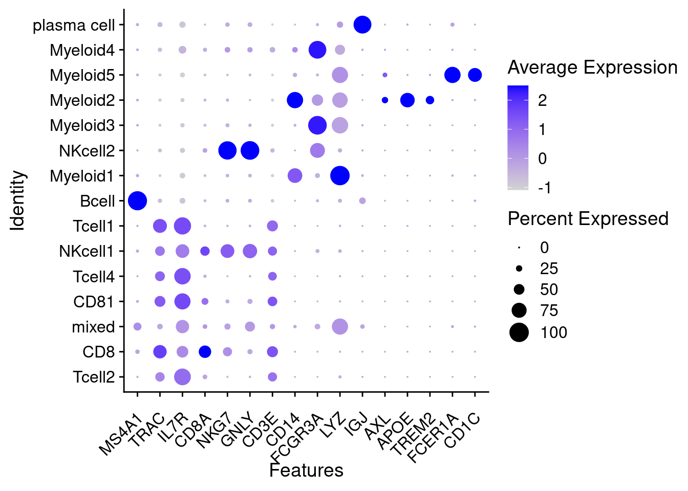
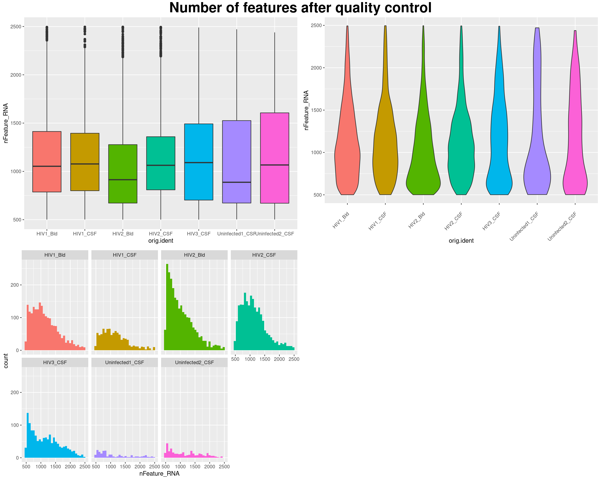

Analysis of HIV-1 CSF dataset
kmikulik
3 12 2021
Last updated: 2021-12-17
Checks: 6 1
Knit directory: report/
This reproducible R Markdown analysis was created with workflowr (version 1.6.2). The Checks tab describes the reproducibility checks that were applied when the results were created. The Past versions tab lists the development history.
Great! Since the R Markdown file has been committed to the Git repository, you know the exact version of the code that produced these results.
Great job! The global environment was empty. Objects defined in the global environment can affect the analysis in your R Markdown file in unknown ways. For reproduciblity it’s best to always run the code in an empty environment.
The command set.seed(20211203) was run prior to running the code in the R Markdown file. Setting a seed ensures that any results that rely on randomness, e.g. subsampling or permutations, are reproducible.
Great job! Recording the operating system, R version, and package versions is critical for reproducibility.
- session-info-chunk-inserted-by-workflowr
- unnamed-chunk-1
- unnamed-chunk-10
- unnamed-chunk-11
- unnamed-chunk-12
- unnamed-chunk-13
- unnamed-chunk-14
- unnamed-chunk-15
- unnamed-chunk-16
- unnamed-chunk-17
- unnamed-chunk-18
- unnamed-chunk-19
- unnamed-chunk-2
- unnamed-chunk-20
- unnamed-chunk-21
- unnamed-chunk-22
- unnamed-chunk-23
- unnamed-chunk-24
- unnamed-chunk-25
- unnamed-chunk-26
- unnamed-chunk-27
- unnamed-chunk-28
- unnamed-chunk-29
- unnamed-chunk-3
- unnamed-chunk-30
- unnamed-chunk-31
- unnamed-chunk-32
- unnamed-chunk-33
- unnamed-chunk-34
- unnamed-chunk-35
- unnamed-chunk-36
- unnamed-chunk-37
- unnamed-chunk-38
- unnamed-chunk-39
- unnamed-chunk-4
- unnamed-chunk-40
- unnamed-chunk-41
- unnamed-chunk-42
- unnamed-chunk-43
- unnamed-chunk-44
- unnamed-chunk-45
- unnamed-chunk-46
- unnamed-chunk-47
- unnamed-chunk-48
- unnamed-chunk-49
- unnamed-chunk-5
- unnamed-chunk-50
- unnamed-chunk-51
- unnamed-chunk-52
- unnamed-chunk-53
- unnamed-chunk-54
- unnamed-chunk-55
- unnamed-chunk-56
- unnamed-chunk-57
- unnamed-chunk-58
- unnamed-chunk-59
- unnamed-chunk-6
- unnamed-chunk-60
- unnamed-chunk-61
- unnamed-chunk-62
- unnamed-chunk-63
- unnamed-chunk-64
- unnamed-chunk-65
- unnamed-chunk-66
- unnamed-chunk-67
- unnamed-chunk-68
- unnamed-chunk-69
- unnamed-chunk-7
- unnamed-chunk-8
- unnamed-chunk-9
To ensure reproducibility of the results, delete the cache directory HIV_CSF_dataset_analysis_cache and re-run the analysis. To have workflowr automatically delete the cache directory prior to building the file, set delete_cache = TRUE when running wflow_build() or wflow_publish().
Great job! Using relative paths to the files within your workflowr project makes it easier to run your code on other machines.
Great! You are using Git for version control. Tracking code development and connecting the code version to the results is critical for reproducibility.
The results in this page were generated with repository version 04f6753. See the Past versions tab to see a history of the changes made to the R Markdown and HTML files.
Note that you need to be careful to ensure that all relevant files for the analysis have been committed to Git prior to generating the results (you can use wflow_publish or wflow_git_commit). workflowr only checks the R Markdown file, but you know if there are other scripts or data files that it depends on. Below is the status of the Git repository when the results were generated:
Ignored files:
Ignored: analysis/HIV_CSF_dataset_analysis_cache/
Ignored: analysis/Independent_cell_type_identification_Farhadian_dataset_cache/
Ignored: analysis/TF_activity_analysis_of_myeloid2_cluster_cache/
Ignored: analysis/Triculture_dataset_analysis_and_integration_Farhadian_dataset_cache/
Untracked files:
Untracked: analysis/html_test.Rmd
Unstaged changes:
Modified: analysis/Independent_cell_type_identification_Farhadian_dataset.Rmd
Modified: analysis/Introduction.Rmd
Modified: analysis/TF_activity_analysis_of_myeloid2_cluster.Rmd
Modified: analysis/Triculture_dataset_analysis_and_integration_Farhadian_dataset.Rmd
Modified: analysis/_site.yml
Modified: analysis/references.bib
Note that any generated files, e.g. HTML, png, CSS, etc., are not included in this status report because it is ok for generated content to have uncommitted changes.
These are the previous versions of the repository in which changes were made to the R Markdown (analysis/HIV_CSF_dataset_analysis.Rmd) and HTML (docs/HIV_CSF_dataset_analysis.html) files. If you’ve configured a remote Git repository (see ?wflow_git_remote), click on the hyperlinks in the table below to view the files as they were in that past version.
| File | Version | Author | Date | Message |
|---|---|---|---|---|
| Rmd | 04f6753 | Katharina782 | 2021-12-17 | wflow_publish(files = rmd) |
| html | 5830d4f | Katharina782 | 2021-12-16 | Build site. |
| Rmd | 3ba2986 | Katharina782 | 2021-12-16 | wflow_publish(“analysis/HIV_CSF_dataset_analysis.Rmd”) |
| Rmd | dde1097 | Katharina782 | 2021-12-10 | recent updates |
| html | dde1097 | Katharina782 | 2021-12-10 | recent updates |
knitr::opts_chunk$set(echo = TRUE, collapse = TRUE, message = FALSE,
cache = TRUE, cache.lazy = FALSE, autodep = TRUE)
set.seed(42)The aim was to reproduce the analysis done by (Shelli F. Farhadian and Spudich 2018). Some additional analysis was performed on the Microlglia-like clusters identified in this dataset.
The dataset contains:
- 3 CSF samples from HIV1-infected patients
- 2 Blood samples from HIV1-infected patients
- 2 CSF samples from uninfected patients
For more details see (Shelli F. Farhadian and Spudich 2018).
- Import libraries
library(tidyverse)
library(Seurat)
library(edgeR)
library(Matrix)
library(data.table)
library(ggplot2)
library(dplyr)
library(ggrepel)
library(RColorBrewer)
library(pheatmap)
library(ggcorrplot)
library(ComplexHeatmap)
library(circlize)
library(ggpubr)
library(gridExtra)
library(corrplot)
library(rstatix)
library(knitr)
library(metap)
library(multtest)
library(readxl)
library(harmony)
library(SeuratDisk)
library(patchwork)- Read in count matrices
The data is available under https://www.ncbi.nlm.nih.gov/geo/query/acc.cgi?acc=GSE117397 There is one count matrix for each of the 7 samples.
path <- "/media/ag-cherrmann/kmikulik/HIV_microglia/data/GSE117397_RAW (1)/"
all_files <- list.files(path)
#Function to create a sparse matrix from each of the dataframes
sparse_matrix_from_df <- function(df) {
#print(df)
#class(df)
genes <- df$GENE
df_minus <- df[,-1]
#matrix <- as.matrix(df_minus)
sparse_matrix <- as.sparse(df_minus)
rownames(sparse_matrix) <- genes
return(sparse_matrix)
}
hiv_object_list <- map(seq.int(2,6), function(n) {
file <- all_files[grepl(paste0("GSM329382", n), all_files)]
name <- str_extract(file, "HIV[1-3]_\\w{3}")
df <- read_delim(paste0(path, file), delim = "\t")
sparse_matrix <- sparse_matrix_from_df(df)
seurat_ob <- CreateSeuratObject(sparse_matrix, project = name,
assay = "RNA", min.cells = 1,
min.features = 1)
list(df=df, sparse_matrix = sparse_matrix, seurat_ob = seurat_ob, name=name)
})
── Column specification ────────────────────────────────────────────────────────
cols(
.default = col_double(),
GENE = col_character()
)
ℹ Use `spec()` for the full column specifications.
Warning: Feature names cannot have underscores ('_'), replacing with dashes
('-')
── Column specification ────────────────────────────────────────────────────────
cols(
.default = col_double(),
GENE = col_character()
)
ℹ Use `spec()` for the full column specifications.
Warning: Feature names cannot have underscores ('_'), replacing with dashes
('-')
── Column specification ────────────────────────────────────────────────────────
cols(
.default = col_double(),
GENE = col_character()
)
ℹ Use `spec()` for the full column specifications.
Warning: Feature names cannot have underscores ('_'), replacing with dashes
('-')
── Column specification ────────────────────────────────────────────────────────
cols(
.default = col_double(),
GENE = col_character()
)
ℹ Use `spec()` for the full column specifications.
Warning: Feature names cannot have underscores ('_'), replacing with dashes
('-')
── Column specification ────────────────────────────────────────────────────────
cols(
.default = col_double(),
GENE = col_character()
)
ℹ Use `spec()` for the full column specifications.
Warning: Feature names cannot have underscores ('_'), replacing with dashes
('-')
uninfected_list <- map(seq.int(7,8), function(n) {
file <- all_files[grepl(paste0("GSM329382", n), all_files)]
name <- str_extract(file, "Uninfected[12]_CSF")
df <- read_delim(paste0(path, file), delim = "\t")
sparse_matrix <- sparse_matrix_from_df(df)
seurat_ob <- CreateSeuratObject(sparse_matrix, project = name,
assay = "RNA", min.cells = 1,
min.features = 1, verbose = FALSE)
list(df=df, sparse_matrix = sparse_matrix, seurat_ob = seurat_ob, name=name)
})
── Column specification ────────────────────────────────────────────────────────
cols(
.default = col_double(),
GENE = col_character()
)
ℹ Use `spec()` for the full column specifications.
Warning: Feature names cannot have underscores ('_'), replacing with dashes
('-')
── Column specification ────────────────────────────────────────────────────────
cols(
.default = col_double(),
GENE = col_character()
)
ℹ Use `spec()` for the full column specifications.
Warning: Feature names cannot have underscores ('_'), replacing with dashes
('-')
#write.table(uninfected_list[[1]]$sparse_matrix,
# "/media/ag-cherrmann/kmikulik/HIV_microglia/src/job_test.tsv",
# sep = "\t")- Create a Seurat object with all samples
hiv <- merge(hiv_object_list[[1]]$seurat_ob,
c(hiv_object_list[[2]]$seurat_ob,
hiv_object_list[[3]]$seurat_ob,
hiv_object_list[[4]]$seurat_ob,
hiv_object_list[[5]]$seurat_ob,
uninfected_list[[1]]$seurat_ob,
uninfected_list[[2]]$seurat_ob),
project = "hiv_total",
add.cell.ids = c("1B", "1C", "2B", "2C", "3C", "U1", "U2"))
# add percentage of mitochondrial genes to the metadata
hiv[["percent_mt"]] <- PercentageFeatureSet(hiv, pattern = "^MT-")Quality Control
(on every individual object)
- Function to remove features that are expressed in less than three cells:
#returns a list of feature names to keep
remove_features <- function(seurat_ob) {
count_matrix <- seurat_ob@assays$RNA@counts
ncells <- rowSums(count_matrix != 0) # how many cells are expressing a
#certain gene?
names(ncells[ncells > 3]) #extract gene names of genes expressed in more
#than 3 cells
}- Function to remove 10% of cell with highest mitochondrial gene expression
# remove 10% of cells with the highest mitochondrial percentage
#returns a list of cell names to keep
remove_mt_genes <- function(seurat_ob){
thr <- quantile(seurat_ob@meta.data$percent_mt, .9)
seurat_ob@meta.data %>%
filter(percent_mt < thr) %>%
rownames()
}Perform Quality Control
I do the quality control for each sample separately and then combine them again.
Question: Does it make sense to scale the data separately? Not really, because when you merge them you have to scale them anyways.
When doing the quality control how important is the order of the operations? If you first remove nFeatures > 500 and then features exppressed in more than 3 cells -> then the nFeatures might be below 500.
separate_objects <- SplitObject(hiv, split.by = "orig.ident")#[-c(5,6,7)]
# only keep two blood samples and two csf samples
qc <- lapply(X = separate_objects, FUN = function(x) {
#x[["percent_mt"]] <- PercentageFeatureSet(x, pattern = "^MT-")
# add percentage of mitochondrial genes to the metadata
x <- subset(x, features = remove_features(x))
#create a list of cells excluding the 10% of cells with the highest mt gene expression
x <- subset(x, nFeature_RNA < 2500 & nFeature_RNA > 500)
x <- subset(x, cells = remove_mt_genes(x))
# remove 10% of cells with highest mitochondrial gene expression
#x <- NormalizeData(x)
#x <- ScaleData(x)
})
hiv_filt <- merge(qc[[1]],
c(qc[[2]],
qc[[3]],
qc[[4]],
qc[[5]],
qc[[6]],
qc[[7]]),
project = "hiv_filt")#,
#add.cell.ids = c("1B", "1C", "2B", "2C", "3C", "U1", "U2"))Have a look at the quality of the different samples.
Number of Features
#have a look at the number of detected features
p1 <- hiv@meta.data %>%
ggplot() +
geom_boxplot(aes(x = orig.ident, y = nFeature_RNA, fill = orig.ident)) +
theme(axis.text.x = element_text(angle = 45, vjust = 0.8, hjust = 1)) +
NoLegend()
p2 <- hiv@meta.data %>%
ggplot() +
geom_histogram(aes(x = nFeature_RNA, fill = orig.ident), bins = 100) +
facet_wrap(~ orig.ident, ncol = 4) +
NoLegend()
p3 <- hiv@meta.data %>%
ggplot() +
geom_violin(aes(x = orig.ident, y = nFeature_RNA, fill = orig.ident)) +
theme(axis.text.x = element_text(angle = 45, vjust = 0.8, hjust = 1)) +
NoLegend()
p4 <- hiv@meta.data %>%
ggplot() +
geom_violin(aes(x = orig.ident, y = nFeature_RNA, fill = orig.ident)) +
scale_y_log10() +
theme(axis.text.x = element_text(angle = 45, vjust = 0.8, hjust = 1)) +
NoLegend()
figure <- ggarrange(p1, p3, p4, p2, ncol = 2, nrow = 2)
annotate_figure(figure, top = text_grob("Number of Features",
size = 25, face = "bold"))
| Version | Author | Date |
|---|---|---|
| dde1097 | Katharina782 | 2021-12-10 |
hiv@meta.data %>%
group_by(orig.ident) %>%
summarise(n = n(), q25 = quantile(nFeature_RNA, .25),
q50 = quantile(nFeature_RNA, .5),
q75 = quantile(nFeature_RNA, .75),
mean = mean(nFeature_RNA)) %>% kable()| orig.ident | n | q25 | q50 | q75 | mean |
|---|---|---|---|---|---|
| HIV1_Bld | 4998 | 128 | 458.0 | 1021 | 654.7989 |
| HIV1_CSF | 4995 | 16 | 32.0 | 341 | 315.3642 |
| HIV2_Bld | 5000 | 360 | 581.0 | 987 | 738.4262 |
| HIV2_CSF | 4996 | 126 | 584.5 | 1087 | 697.9960 |
| HIV3_CSF | 5000 | 175 | 309.0 | 666 | 542.9580 |
| Uninfected1_CSF | 4994 | 22 | 44.0 | 114 | 151.0993 |
| Uninfected2_CSF | 4990 | 31 | 79.0 | 206 | 205.2401 |
Library Size
# have a look at the library size
p1 <- hiv@meta.data %>%
ggplot() +
geom_boxplot(aes(x = orig.ident, y = nCount_RNA, fill = orig.ident)) +
theme(axis.text.x = element_text(angle = 45, vjust = 0.8, hjust = 1)) +
NoLegend()
p2 <- hiv@meta.data %>%
ggplot() +
geom_histogram(aes(x = nCount_RNA, fill = orig.ident), bins = 100) +
facet_wrap(~ orig.ident, ncol = 4) +
NoLegend()
p3 <- hiv@meta.data %>%
ggplot() +
geom_violin(aes(x = orig.ident, y = nCount_RNA, fill = orig.ident)) +
theme(axis.text.x = element_text(angle = 45, vjust = 0.8, hjust = 1)) +
NoLegend()
p4 <- hiv@meta.data %>%
ggplot() +
geom_violin(aes(x = orig.ident, y = nCount_RNA, fill = orig.ident)) +
scale_y_log10() +
theme(axis.text.x = element_text(angle = 45, vjust = 0.8, hjust = 1)) +
NoLegend()
figure <- ggarrange(p1, p3, p4, p2, ncol = 2, nrow = 2)
annotate_figure(figure, top = text_grob("Library size (number of counts)",
size = 25, face = "bold"))
| Version | Author | Date |
|---|---|---|
| dde1097 | Katharina782 | 2021-12-10 |
hiv@meta.data %>%
group_by(orig.ident) %>%
summarise(n = n(), q25 = quantile( nCount_RNA, .25),
q50 = quantile(nCount_RNA, .5),
q75 = quantile(nCount_RNA, .75),
mean = mean(nCount_RNA)) %>% kable()| orig.ident | n | q25 | q50 | q75 | mean |
|---|---|---|---|---|---|
| HIV1_Bld | 4998 | 196 | 772.0 | 2098.00 | 1424.6823 |
| HIV1_CSF | 4995 | 19 | 39.0 | 517.00 | 648.8895 |
| HIV2_Bld | 5000 | 577 | 1006.0 | 1970.50 | 1523.0344 |
| HIV2_CSF | 4996 | 173 | 929.0 | 2053.25 | 1369.0498 |
| HIV3_CSF | 5000 | 238 | 473.5 | 1280.50 | 1216.9344 |
| Uninfected1_CSF | 4994 | 26 | 53.0 | 146.00 | 269.5036 |
| Uninfected2_CSF | 4990 | 37 | 96.5 | 272.00 | 356.2377 |
Percentage of Mitochondrial genes
# have a look at the percentage of mitochondrial genes
p1 <- hiv@meta.data %>%
ggplot() +
geom_boxplot(aes(x = orig.ident, y = percent_mt, fill = orig.ident)) +
theme(axis.text.x = element_text(angle = 45, vjust = 0.8, hjust = 1)) +
NoLegend()
p2 <- hiv@meta.data %>%
ggplot() +
geom_histogram(aes(x = percent_mt, fill = orig.ident), bins = 100) +
facet_wrap(~ orig.ident, ncol = 4) +
NoLegend()
p3 <- hiv@meta.data %>%
ggplot() +
geom_violin(aes(x = orig.ident, y = percent_mt, fill = orig.ident)) +
theme(axis.text.x = element_text(angle = 45, vjust = 0.8, hjust = 1)) +
NoLegend()
p4 <- hiv@meta.data %>%
ggplot() +
geom_violin(aes(x = orig.ident, y = percent_mt, fill = orig.ident)) +
scale_y_log10() +
theme(axis.text.x = element_text(angle = 45, vjust = 0.8, hjust = 1)) +
NoLegend()
figure <- ggarrange(p1, p3, p4, p2, ncol = 2, nrow = 2)
Warning: Transformation introduced infinite values in continuous y-axis
Warning: Removed 2014 rows containing non-finite values (stat_ydensity).
annotate_figure(figure, top = text_grob("Percentage of Mitochondrial gene",
size = 25, face = "bold"))
| Version | Author | Date |
|---|---|---|
| dde1097 | Katharina782 | 2021-12-10 |
hiv@meta.data %>%
group_by(orig.ident) %>%
summarise(n = n(), q25 = quantile( percent_mt, .25),
q50 = quantile(percent_mt, .5),
q75 = quantile(percent_mt, .75),
mean = mean(percent_mt)) %>% kable()| orig.ident | n | q25 | q50 | q75 | mean |
|---|---|---|---|---|---|
| HIV1_Bld | 4998 | 6.140696 | 10.314638 | 16.83490 | 13.746867 |
| HIV1_CSF | 4995 | 4.000000 | 8.522727 | 15.38462 | 12.092172 |
| HIV2_Bld | 5000 | 9.558731 | 14.370956 | 20.53664 | 16.562072 |
| HIV2_CSF | 4996 | 7.387619 | 11.188337 | 16.68489 | 13.814837 |
| HIV3_CSF | 5000 | 2.590861 | 4.413543 | 7.26931 | 5.785039 |
| Uninfected1_CSF | 4994 | 4.165372 | 8.333333 | 14.70588 | 10.832587 |
| Uninfected2_CSF | 4990 | 3.675874 | 7.462687 | 12.73541 | 9.618704 |
Quality of the different samples after quality control
- removing the 10% of cells with the highest percentage of mitochdonrial genes
- remove features that are expressed in less than 3 cells
- remove cells with 500 < nFeature_RNA > 2500
It seems that the CSF1 samples, as well as the two uninfected samples have very few cells with nFeature_RNA > 500, so we are left with less cells from these samples
Number of features after Quality Control
# Have a look at the number of Feature RNA
p1 <- hiv_filt@meta.data %>%
ggplot() +
geom_boxplot(aes(x = orig.ident, y = nFeature_RNA, fill = orig.ident)) +
NoLegend()
p2 <- hiv_filt@meta.data %>%
ggplot()+
geom_violin(aes(x = orig.ident, y = nFeature_RNA, fill = orig.ident)) +
theme(axis.text.x = element_text(angle = 45, vjust = 0.8, hjust = 1)) +
NoLegend()
p3 <- hiv_filt@meta.data %>%
ggplot() +
geom_histogram(aes(x = nFeature_RNA, fill = orig.ident)) +
facet_wrap(~orig.ident, ncol = 4) +
NoLegend()
figure <- ggarrange(p1, p2, p3, ncol = 2, nrow = 2)
`stat_bin()` using `bins = 30`. Pick better value with `binwidth`.
annotate_figure(figure, top = text_grob("Number of features after quality control",
size = 25, face = "bold"))
| Version | Author | Date |
|---|---|---|
| dde1097 | Katharina782 | 2021-12-10 |
hiv_filt@meta.data %>% group_by(orig.ident) %>%
summarise(n = n(), q25 = quantile(nFeature_RNA, .25),
q50 = quantile(nFeature_RNA, .5),
q75 = quantile(nFeature_RNA, .75),
mean = mean(nFeature_RNA)) %>% kable| orig.ident | n | q25 | q50 | q75 | mean |
|---|---|---|---|---|---|
| HIV1_Bld | 2076 | 786.75 | 1053.0 | 1413.25 | 1140.157 |
| HIV1_CSF | 932 | 800.00 | 1077.0 | 1395.00 | 1142.855 |
| HIV2_Bld | 2520 | 672.00 | 914.0 | 1277.00 | 1023.094 |
| HIV2_CSF | 2309 | 809.00 | 1063.0 | 1359.00 | 1129.844 |
| HIV3_CSF | 1384 | 703.00 | 1091.0 | 1492.25 | 1153.576 |
| Uninfected1_CSF | 216 | 672.50 | 887.5 | 1526.00 | 1133.796 |
| Uninfected2_CSF | 340 | 670.50 | 1066.5 | 1606.00 | 1155.576 |
Library size after Quality Control
p1 <- hiv_filt@meta.data %>%
ggplot() +
geom_boxplot(aes(x = orig.ident, y = nCount_RNA, fill = orig.ident)) +
NoLegend()
p2 <- hiv_filt@meta.data %>%
ggplot()+
geom_violin(aes(x = orig.ident, y = nCount_RNA, fill = orig.ident)) +
theme(axis.text.x = element_text(angle = 45, vjust = 0.8, hjust = 1)) +
NoLegend()
p3 <- hiv_filt@meta.data %>%
ggplot() +
geom_histogram(aes(x = nCount_RNA, fill = orig.ident)) +
facet_wrap(~orig.ident, ncol = 4) +
NoLegend()
figure <- ggarrange(p1, p2, p3, ncol = 2, nrow = 2)
`stat_bin()` using `bins = 30`. Pick better value with `binwidth`.
annotate_figure(figure, top = text_grob("Library size (number of counts) after quality control",
size = 25, face = "bold"))
| Version | Author | Date |
|---|---|---|
| dde1097 | Katharina782 | 2021-12-10 |
hiv_filt@meta.data %>% group_by(orig.ident) %>%
summarise(n = n(), q25 = quantile(nCount_RNA, .25),
q50 = quantile(nCount_RNA, .5),
q75 = quantile(nCount_RNA, .75),
mean = mean(nCount_RNA)) %>% kable| orig.ident | n | q25 | q50 | q75 | mean |
|---|---|---|---|---|---|
| HIV1_Bld | 2076 | 1458.75 | 2179.5 | 3264.25 | 2522.768 |
| HIV1_CSF | 932 | 1410.75 | 2102.5 | 3066.75 | 2378.643 |
| HIV2_Bld | 2520 | 1187.50 | 1779.5 | 2822.25 | 2158.089 |
| HIV2_CSF | 2309 | 1374.00 | 1984.0 | 2745.00 | 2222.453 |
| HIV3_CSF | 1384 | 1377.25 | 2381.5 | 3845.25 | 2842.006 |
| Uninfected1_CSF | 216 | 1063.25 | 1491.5 | 2968.75 | 2177.278 |
| Uninfected2_CSF | 340 | 1063.50 | 1876.0 | 3399.50 | 2328.871 |
Percentage of Mitochondrial genes after Quality Conrol
p1 <- hiv_filt@meta.data %>%
ggplot() +
geom_boxplot(aes(x = orig.ident, y = percent_mt, fill = orig.ident)) +
NoLegend()
p2 <- hiv_filt@meta.data %>%
ggplot()+
geom_violin(aes(x = orig.ident, y = percent_mt, fill = orig.ident)) +
theme(axis.text.x = element_text(angle = 45, vjust = 0.8, hjust = 1)) +
NoLegend()
p3 <- hiv_filt@meta.data %>%
ggplot() +
geom_histogram(aes(x = percent_mt, fill = orig.ident)) +
facet_wrap(~orig.ident, ncol = 4) +
NoLegend()
figure <- ggarrange(p1, p2, p3, ncol = 2, nrow = 2)
`stat_bin()` using `bins = 30`. Pick better value with `binwidth`.
annotate_figure(figure, top = text_grob("Percentage of Mitochondrial genes after quality control",
size = 25, face = "bold"))
| Version | Author | Date |
|---|---|---|
| dde1097 | Katharina782 | 2021-12-10 |
hiv_filt@meta.data %>% group_by(orig.ident) %>%
summarise(n = n(), q25 = quantile(percent_mt, .25),
q50 = quantile(percent_mt, .5),
q75 = quantile(percent_mt, .75),
mean = mean(percent_mt)) %>% kable| orig.ident | n | q25 | q50 | q75 | mean |
|---|---|---|---|---|---|
| HIV1_Bld | 2076 | 5.659778 | 8.616470 | 12.057771 | 9.006083 |
| HIV1_CSF | 932 | 5.067679 | 7.526483 | 10.327807 | 7.820102 |
| HIV2_Bld | 2520 | 8.428856 | 12.017682 | 15.653130 | 12.183780 |
| HIV2_CSF | 2309 | 7.420091 | 10.051282 | 13.119900 | 10.296168 |
| HIV3_CSF | 1384 | 2.045621 | 3.169997 | 4.804080 | 3.582988 |
| Uninfected1_CSF | 216 | 4.339334 | 5.927984 | 8.122936 | 6.373704 |
| Uninfected2_CSF | 340 | 3.683668 | 5.999618 | 8.409969 | 6.088557 |
Subset Seurat object
Use 4 samples (2 blood, 2 csf) from two patients for further analysis like in the paper:
hiv4 <- subset(hiv_filt, orig.ident %in% c("HIV1_CSF", "HIV2_CSF", "HIV1_Bld", "HIV2_Bld"))- Normalize, Scale and find variable features
hiv4 <- NormalizeData(hiv4, verbose = FALSE)
hiv4 <- ScaleData(hiv4, verbose = FALSE)
hiv4 <- FindVariableFeatures(hiv4, verbose = FALSE)- Save the log-normalized count matrix as a tsv file for Scenic Workflow
# use only the infected samples, but not the uninfected samples
scenic_samples <- subset(hiv_filt, orig.ident %in% c("HIV1_CSF", "HIV2_CSF",
"HIV1_Bld", "HIV2_Bld", "HIV3_CSF"))
# because the snakemake pipeline of Carlos pySCENIC_pipeline: https://github.com/hdsu-bioquant/pySCENIC_pipeline/blob/master/input/gene_exp_mtx_example.tsv
# requires an input matrix which has genes as columns and cells as rows
# I will transpose the matrix
## Try with SCTTransform
# select only the 3000 most highly variable features
# this might solve the problem with the snakemake file, because then you do not have genes with very low expression...
scenic_samples <- SCTransform(scenic_samples, verbose = FALSE)
#hvg <- scenic_samples@assays$SCT@var.features
sct_test_seurat <- subset(scenic_samples,
features = scenic_samples@assays$SCT@var.features)
sct_test_mtx <- sct_test_seurat@assays$SCT@scale.data
# full matrix for Scenic workflow
sct_hiv_mtx <- t(sct_test_mtx)
#write.table(x = sct_hiv_mtx,
# file = "/media/ag-cherrmann/kmikulik/HIV_microglia/src/pySCENIC_pipeline/input/sct_hi#v_mtx.tsv", sep = "\t")
Dimensionality reduction
PCA
Compute PCA for highly variable genes: The first 10 dimensions seem to account for most of the variance (see elbow plot). The plots seem to indicate that the blood samples and csf samples are different.
hiv4 <- RunPCA(hiv4, features = VariableFeatures(hiv4), verbose = FALSE)
# elbow plot to determine which PCs account for most of the variance
ElbowPlot(hiv4)
#pca plots
pca_plots <- comprehenr::to_list(for (i in 1:13)
DimPlot(hiv4, reduction = "pca", dims = i : (i+1)) +
theme())
do.call(gridExtra::grid.arrange, c(pca_plots, ncol=3, nrow = 5))
Clustering & tSNE embedding
- compute KNN-graph
- find clusters based on KNN-graph with Louvian algorithm
hiv4 <- FindNeighbors(hiv4, verbose = FALSE)
hiv4 <- FindClusters(hiv4, verbose = FALSE)
table(hiv4$seurat_clusters)
0 1 2 3 4 5 6 7 8 9 10 11 12 13 14
1301 1119 948 868 742 687 677 415 308 301 132 106 105 72 56 Questions:
When looking at the nFeatureRNA, percent_mt should some clustes be removed?
Is there a batch effect?
hiv4 <- RunTSNE(hiv4, dims = 1:10, verbose = FALSE)tsne_coord <- Embeddings(hiv4[["tsne"]]) # tsne coordinates
meta <- hiv4@meta.data # metadata
cm <- hiv4@assays$RNA@counts # count matrix
# UMAP with number of features detected per cell
p1 <- cbind(meta, tsne_coord) %>%
ggplot() +
geom_point(aes(x=tSNE_1, y=tSNE_2, col=nFeature_RNA), size=.5) +
scale_color_viridis_c()
# percentage of mitochondrial genes per cell
p2 <- cbind(meta, tsne_coord) %>%
ggplot() +
geom_point(aes(x = tSNE_1, y = tSNE_2, col = percent_mt ), size = .5) +
scale_color_viridis_c()
# UMAP indicating the sample where each cell came from
p3 <- cbind(meta, tsne_coord) %>%
ggplot() +
geom_point(aes(x = tSNE_1, y = tSNE_2, col = orig.ident ), size = .5)
# UMAP labeled according to clusters
p4 <- cbind(meta, tsne_coord) %>%
ggplot() +
geom_point(aes(x = tSNE_1, y = tSNE_2, col = seurat_clusters ), size = .5)
ggarrange(p1, p2, p3, p4, ncol = 2, nrow = 2)
| Version | Author | Date |
|---|---|---|
| dde1097 | Katharina782 | 2021-12-10 |
Find Marker genes
marker_genes <- FindAllMarkers(hiv4, logfc.threshold = .01, min.pct = .01)# filter for significant marker genes
#sign_marker_genes <- marker_genes %>% filter(p_val_adj <= .1)
sign_marker_genes <- read.table(file = "/media/ag-cherrmann/kmikulik/HIV_microglia/src/Reproduce_Farhadian_Paper/sign_marker_genes.tsv")
#show the top 10 differentially expressed genes for each cluster
sign_marker_genes %>% group_by(cluster) %>% top_n(n = 2, wt = avg_logFC ) %>% kable| p_val | avg_logFC | pct.1 | pct.2 | p_val_adj | cluster | gene |
|---|---|---|---|---|---|---|
| 0 | 0.9583899 | 0.545 | 0.144 | 0 | 0 | CCR7 |
| 0 | 0.7910095 | 0.463 | 0.149 | 0 | 0 | LEF1 |
| 0 | 1.3378085 | 0.955 | 0.401 | 0 | 1 | CCL5 |
| 0 | 1.3312006 | 0.627 | 0.117 | 0 | 1 | GZMK |
| 0 | 0.9648694 | 0.818 | 0.141 | 0 | 2 | LYZ |
| 0 | 0.9325701 | 0.039 | 0.002 | 0 | 2 | CLC |
| 0 | 0.5249648 | 0.814 | 0.617 | 0 | 3 | IL7R |
| 0 | 0.5271194 | 0.358 | 0.172 | 0 | 3 | GZMK |
| 0 | 0.5918064 | 0.681 | 0.468 | 0 | 4 | LTB |
| 0 | 0.4685953 | 0.831 | 0.618 | 0 | 4 | IL7R |
| 0 | 1.3880325 | 0.713 | 0.183 | 0 | 5 | GNLY |
| 0 | 1.1492939 | 0.677 | 0.177 | 0 | 5 | NKG7 |
| 0 | 0.7306204 | 0.875 | 0.457 | 0 | 6 | LTB |
| 0 | 0.6855607 | 0.481 | 0.172 | 0 | 6 | MAF |
| 0 | 2.7480043 | 0.983 | 0.093 | 0 | 7 | MS4A1 |
| 0 | 2.2013054 | 0.670 | 0.041 | 0 | 7 | IGHM |
| 0 | 3.4870174 | 1.000 | 0.191 | 0 | 8 | LYZ |
| 0 | 3.1688361 | 0.977 | 0.123 | 0 | 8 | S100A9 |
| 0 | 2.1622754 | 0.804 | 0.063 | 0 | 9 | FGFBP2 |
| 0 | 2.2885232 | 0.957 | 0.201 | 0 | 9 | GNLY |
| 0 | 2.3732654 | 0.955 | 0.098 | 0 | 10 | FCGR3A |
| 0 | 2.4715316 | 0.977 | 0.137 | 0 | 10 | AIF1 |
| 0 | 3.0007641 | 0.860 | 0.004 | 0 | 11 | C1QB |
| 0 | 2.8593634 | 0.794 | 0.002 | 0 | 11 | C1QC |
| 0 | 2.8500142 | 1.000 | 0.235 | 0 | 12 | HLA-DPA1 |
| 0 | 2.8524059 | 1.000 | 0.239 | 0 | 12 | HLA-DRA |
| 0 | 3.7525676 | 0.986 | 0.014 | 0 | 13 | FCGR3B |
| 0 | 3.6378226 | 0.653 | 0.053 | 0 | 13 | IL8 |
| 0 | 4.1426093 | 0.911 | 0.039 | 0 | 14 | IGJ |
| 0 | 4.0013955 | 0.321 | 0.026 | 0 | 14 | IGHG1 |
Cell type annotation with canonical marker genes:
B cell markers
Are found primarily in cluster 7.
p1 <- VlnPlot(hiv4, features = c("MS4A1", "CD79A", "TCL1A"), pt.size = .01)
p2 <- RidgePlot(hiv4, features = c("MS4A1", "CD79A", "TCL1A"), sort = "decreasing" )
ggarrange(p1,p2, nrow = 2, ncol = 1)
Picking joint bandwidth of 0.0311
Picking joint bandwidth of 0.0413
Picking joint bandwidth of 2.99e-06
| Version | Author | Date |
|---|---|---|
| dde1097 | Katharina782 | 2021-12-10 |
NK cells
In cluster 5 and 9. GZMB is also foudn in cluster 14.
p1 <- VlnPlot(hiv4, features = c("NKG7", "GNLY", "GZMB"),
pt.size = .01, ncol = 3)#, stack = TRUE)
p2 <- RidgePlot(hiv4, features = c("NKG7", "GNLY", "GZMB"), sort = "decreasing")
ggarrange(p1,p2, nrow = 2, ncol = 1)
Picking joint bandwidth of 0.0482
Picking joint bandwidth of 0.0544
Picking joint bandwidth of 0.0471
| Version | Author | Date |
|---|---|---|
| dde1097 | Katharina782 | 2021-12-10 |
Tcells
- A general T cell marker CD3E is expressed in cluster 0,1,3,4,5,6.
- IL7R in clusters 0-6
- TRAC in clusters 0-6, excluding 2
- CCR7 in 0,6,7
- LDHB not very clear, but 0,1,3,4,6
- LTB in 0-7
- CD2 in 1,3,4,5,9
Tcells 1, 2, 3 are assigned arbitrarily, because they are not used for further analysis.
CD8+ T cells * CD8A is expressed in decreasing order in 1,5,3 (could cluster 1 and 5 be CD8 T cells?)
# general T cell marker for CD4+ and CD8+ Tcells
p1 <- VlnPlot(hiv4, features = c("CD8A","CD3E"), pt.size = .01, ncol = 2)
p2 <- RidgePlot(hiv4, features = c("CD8A","CD3E"), sort = "decreasing")
p3 <- VlnPlot(hiv4, features = c("IL7R", "TRAC"), pt.size = 0.01)
p4 <- RidgePlot(hiv4, features = c("IL7R", "TRAC"), sort = "decreasing")
# helper T cells
p5 <- VlnPlot(hiv4, features = c("LTB", "CD2"), pt.size = .01, ncol = 2)
p6 <- RidgePlot(hiv4, features = c("LTB", "CD2"), sort = "decreasing")
# CD4+ naive T cells
p7 <- VlnPlot(hiv4, features = c("LDHB", "CCR7"), pt.size = .01, ncol = 2)
p8 <- RidgePlot(hiv4, features = c("LDHB", "CCR7"), sort = "decreasing")
ggarrange(p1, p2,p3, p4, p5, p6, p7,p8, ncol = 2, nrow = 4)
Picking joint bandwidth of 0.0515
Picking joint bandwidth of 0.0941
Picking joint bandwidth of 0.169
Picking joint bandwidth of 0.1
Picking joint bandwidth of 0.17
Picking joint bandwidth of 0.161
Picking joint bandwidth of 0.248
Picking joint bandwidth of 0.0395
| Version | Author | Date |
|---|---|---|
| dde1097 | Katharina782 | 2021-12-10 |
plasma cells
in cluster 14
p1 <- VlnPlot(hiv4, features = c("IGJ"), pt.size = .01, ncol = 2)
p2 <- RidgePlot(hiv4, features = c("IGJ"), sort = "decreasing")
ggarrange(p1,p2, nrow = 1, ncol = 2)
Picking joint bandwidth of 0.0585
| Version | Author | Date |
|---|---|---|
| dde1097 | Katharina782 | 2021-12-10 |
Myeloid cells
- granulocytes
- monocytes
- macrophages
- dendritic cells
-> clusters 8, 10, 11, 12, 13 are myeloid cells
The 3 genes (AXL, APOE, TREM2) associated with neurodegenrative-disaes-associated microglia are expressed in myeloid2, however, only at very low concentrations
Myeloid1, 3, 4 are assigned arbitrarily, because they are not of interest.
p1 <- VlnPlot(hiv4, features = c("LYZ", "FCER1A", "CD14", "FCGR3A"), # FCG3A is also expressed in cluster 9 (NK cells)
pt.size = .01, ncol = 2)
p2 <- RidgePlot(hiv4, features = c("LYZ", "FCER1A"),
sort = "decreasing", ncol = 2) # DC markers
p3 <- RidgePlot(hiv4, features = c("CD14", "FCGR3A"),
sort = "decreasing", ncol = 2) # monocytes (LYC also in monocytes)
ggarrange(p1,p2,p3, nrow = 3, ncol = 1)
Picking joint bandwidth of 0.14
Picking joint bandwidth of 0.0228
Picking joint bandwidth of 0.0393
Picking joint bandwidth of 0.0896
| Version | Author | Date |
|---|---|---|
| dde1097 | Katharina782 | 2021-12-10 |
Myeloid 5
- (from paper)
- was characterized by: FCER1A, CD1C
- cluster 12
# Myeloid 5 in the paper
p1 <- VlnPlot(hiv4, features = c( "FCER1A", "CD1C"), pt.size = .01, ncol = 2)
p2 <- RidgePlot(hiv4, features = c("FCER1A", "CD1C"), sort = "decreasing", ncol = 2)
ggarrange(p1, p2, nrow = 2, ncol = 1)
Picking joint bandwidth of 0.0228
Picking joint bandwidth of 0.0264
| Version | Author | Date |
|---|---|---|
| dde1097 | Katharina782 | 2021-12-10 |
Myeloid 2
- (from paper) -> cluster 11
- AXL, APOE, TREM2 (these genes are enriched in neurodegenerative disease-associated microglia)
- “CTSB,” “APOC1,” “MSR1,” “C1QA-C” are expressed more highly in myeloid 2 compared to other myeloid clusters
# Myeloid 2
p1 <- VlnPlot(hiv4, features = c("AXL", "APOE", "TREM2"), pt.size = .01, ncol = 3)
p2 <- RidgePlot(hiv4, features = c("AXL", "APOE", "TREM2"), sort = "decreasing")
p3 <- VlnPlot(hiv4, features = c("CTSB", "APOC1", "MSR1", "C1QA"),
pt.size = .01, ncol = 4)
p4 <- RidgePlot(hiv4, features = c("CTSB", "APOC1", "MSR1", "C1QA"),
sort = "decreasing", ncol = 4)
ggarrange(p1, p2, p3, p4, ncol = 1, nrow = 4)
Picking joint bandwidth of 0.0119
Picking joint bandwidth of 0.0305
Picking joint bandwidth of 0.0205
Picking joint bandwidth of 0.0836
Picking joint bandwidth of 0.0249
Picking joint bandwidth of 0.0291
Picking joint bandwidth of 0.0248
| Version | Author | Date |
|---|---|---|
| dde1097 | Katharina782 | 2021-12-10 |
Annotate cells
- Why is the mixed population primarily composed of cells from HIV1 patient blood sample?
- Why are T cells primarily from CSF samples and CD8 T cells primarily from blood?
Idents(hiv4) <- "seurat_clusters"
cell_types <- c("Tcell2", "CD8", "mixed", "CD81", "Tcell3", "NKcell1",
"Tcell1", "Bcell", "Myeloid1", "NKcell2", "Myeloid3", "Myeloid2"
, "Myeloid5", "Myeloid4", "plasma cell" )
names(cell_types) <- levels(hiv4)
hiv4 <- RenameIdents(hiv4, cell_types)
as.data.frame(cell_types) %>% rownames_to_column("cluster") %>% knitr::kable()| cluster | cell_types |
|---|---|
| 0 | Tcell2 |
| 1 | CD8 |
| 2 | mixed |
| 3 | CD81 |
| 4 | Tcell3 |
| 5 | NKcell1 |
| 6 | Tcell1 |
| 7 | Bcell |
| 8 | Myeloid1 |
| 9 | NKcell2 |
| 10 | Myeloid3 |
| 11 | Myeloid2 |
| 12 | Myeloid5 |
| 13 | Myeloid4 |
| 14 | plasma cell |
# add cell types to metadata
hiv4 <- AddMetaData(hiv4, metadata = Idents(hiv4), col.name = "cell_type")
# add condition blood or csf to metadata
Idents(hiv4) <- "orig.ident"
conditions <- c("Blood", "Blood", "CSF", "CSF")
names(conditions) <- c("HIV1_Bld", "HIV2_Bld", "HIV1_CSF", "HIV2_CSF")
hiv4 <- RenameIdents(hiv4, conditions)
hiv4 <- AddMetaData(hiv4, col.name = "Condition", metadata = Idents(hiv4))
Overview of some of the most important marker genes:
DotPlot(object = hiv4, features = c("MS4A1", # B cells
"TRAC", "IL7R",
"CD8A", # CD8 T cells
"NKG7", "GNLY", # NK cells
"CD3E", # T cells
"CD14","FCGR3A", "LYZ", # myeloid cells
"IGJ", # plasma cells
"AXL", "APOE", "TREM2", # myeloid 2
"FCER1A", "CD1C" # myeloid 5
)) + theme(axis.text.x = element_text(angle = 45, vjust = 0.8, hjust=1))
| Version | Author | Date |
|---|---|---|
| dde1097 | Katharina782 | 2021-12-10 |
Visualize the cell types, conditions, samples and nCountRNA:
p1 <- DimPlot(hiv4, reduction = "tsne", label = TRUE,
group.by = "cell_type", pt.size = 0.1) +
NoLegend()
p2 <- DimPlot(hiv4, reduction = "tsne", group.by = "Condition", pt.size = 0.1)
p3 <- DimPlot(hiv4, reduction = "tsne", group.by = "orig.ident", pt.size = 0.1)
p4 <- FeaturePlot(hiv4, features= "nCount_RNA", pt.size = 0.1) +
scale_color_viridis_c()
Scale for 'colour' is already present. Adding another scale for 'colour',
which will replace the existing scale.
ggarrange(p1,p2,p3,p4, ncol = 2, nrow = 2)
| Version | Author | Date |
|---|---|---|
| dde1097 | Katharina782 | 2021-12-10 |
#p1 + p2 + p3 + p4- Blood and CSF were processed separately for scRNAseq using SeqWell.
- The 4 samples were sequenced separately.
- One SeqWell array per CSF or PBMC samples. (Shelli F. Farhadian and Spudich 2018)
Relative contributions of CSF and blood cells to each cluster
Plot a histogram in order to identify clusters that are predominantly composed of CSF cells.
custom_color <- c("#C3D7A4", "#4E84C4", "#52854C", "#293352")
#plot a barplot of the proportions of samples and cell types
ggplot(hiv4@meta.data) +
geom_bar(aes(x = cell_type, fill = orig.ident)) +
scale_fill_manual( values = custom_color) +
ylab("Number of cells in each cluster") +
theme(axis.text.x = element_text(angle = 45, vjust = 0.8, hjust=1))
| Version | Author | Date |
|---|---|---|
| dde1097 | Katharina782 | 2021-12-10 |
Question: Myeloid-1, Myeloid-2 are mainly found in Blood cells, Myeloid-4 is only found in Blood cells from HIV1 patient. What does that mean?
How big are Myeloid2 and Myeloid5 clusters and where do cells come from?
Myeloid2 cells originate from the CSF samples of HIV-1-infected patients, while a few (13) cells classified as Myeloid5 cells originate from Blood samples.
hiv4@meta.data %>%
filter(cell_type %in% c("Myeloid2", "Myeloid5")) %>%
group_by(cell_type, orig.ident) %>%
summarize(n = n()) %>% kable()
`summarise()` has grouped output by 'cell_type'. You can override using the `.groups` argument.| cell_type | orig.ident | n |
|---|---|---|
| Myeloid2 | HIV1_CSF | 71 |
| Myeloid2 | HIV2_CSF | 35 |
| Myeloid5 | HIV1_Bld | 4 |
| Myeloid5 | HIV1_CSF | 24 |
| Myeloid5 | HIV2_Bld | 9 |
| Myeloid5 | HIV2_CSF | 68 |
Which genes are upregulated in Myeloid-2 compared to the four other myeloid subsets?
In the paper they find 60 genes that are upregulated compared to the other 4 myeloid subsets. (FDR < 0.01)
Compare the genes upregulated in myeloid-2 to the four other myeloid subsets. FindAllMarkers() will compare one cluster to all other clusters. FindMarkers() will compare an indicated cluster with a second indicated cluster. Therefore, the difference will not be diluted, which might be the case if we compare one cluster to many other clusters.
#import the 60 genes that were upregulated in Myeloid-2 in the paper compared to the four other myeloid subsets
paper <- read.table(file = "/media/ag-cherrmann/kmikulik/HIV_microglia/data/Myeloid-2_genes_paper.csv", sep = "\t",
header = FALSE, skipNul = TRUE)#, n_max = 60)
paper[1,] <- "APOC1"
colnames(paper) <- ""
paper <- as.vector(paper[,1])
Idents(hiv4) <- "cell_type"
all.comp <- purrr::map(c(1,3,4,5), function(n){
markers <- FindMarkers(hiv4,
ident.1 = "Myeloid2",
ident.2 = paste0("Myeloid", n), only.pos = TRUE)
markers <- rownames_to_column(markers, var = "gene")
name <- paste0("Comparison Myeloid 2 vs Myeloid ", n)
list(df = markers, name = name)
})
map(seq.int(1,4), function(n) {
all.comp[[n]]$df %>%
filter(p_val_adj <= .2) %>%
filter(gene %in% paper) %>% head() %>% kable()
})[[1]]
| gene | p_val | avg_log2FC | pct.1 | pct.2 | p_val_adj |
|---|---|---|---|---|---|
| C1QB | 0 | 4.322413 | 0.858 | 0.006 | 0 |
| C1QC | 0 | 4.154311 | 0.792 | 0.000 | 0 |
| C1QA | 0 | 3.320555 | 0.783 | 0.016 | 0 |
| APOE | 0 | 3.594296 | 0.726 | 0.000 | 0 |
| LYVE1 | 0 | 3.889012 | 0.651 | 0.000 | 0 |
| MSR1 | 0 | 2.784011 | 0.679 | 0.058 | 0 |
[[2]]
| gene | p_val | avg_log2FC | pct.1 | pct.2 | p_val_adj |
|---|---|---|---|---|---|
| C1QB | 0 | 3.830956 | 0.858 | 0.068 | 0 |
| C1QC | 0 | 4.022519 | 0.792 | 0.008 | 0 |
| CD14 | 0 | 3.605687 | 0.830 | 0.053 | 0 |
| HLA-DPB1 | 0 | 2.540395 | 0.962 | 0.470 | 0 |
| HLA-DRA | 0 | 2.381817 | 0.981 | 0.720 | 0 |
| APOE | 0 | 3.594296 | 0.726 | 0.000 | 0 |
[[3]]
| gene | p_val | avg_log2FC | pct.1 | pct.2 | p_val_adj |
|---|---|---|---|---|---|
| HLA-DRA | 0 | 4.314835 | 0.981 | 0.069 | 0 |
| HLA-DPB1 | 0 | 3.571806 | 0.962 | 0.097 | 0 |
| CD74 | 0 | 3.850998 | 0.972 | 0.236 | 0 |
| HLA-DPA1 | 0 | 3.969028 | 0.915 | 0.083 | 0 |
| C1QB | 0 | 4.376544 | 0.858 | 0.000 | 0 |
| HLA-DRB1 | 0 | 3.970074 | 0.887 | 0.069 | 0 |
[[4]]
| gene | p_val | avg_log2FC | pct.1 | pct.2 | p_val_adj |
|---|---|---|---|---|---|
| C1QB | 0 | 3.957066 | 0.858 | 0.048 | 0 |
| C1QC | 0 | 4.154311 | 0.792 | 0.000 | 0 |
| CD14 | 0 | 3.253946 | 0.830 | 0.133 | 0 |
| C1QA | 0 | 3.136295 | 0.783 | 0.048 | 0 |
| APOE | 0 | 3.564194 | 0.726 | 0.010 | 0 |
| LYVE1 | 0 | 3.889012 | 0.651 | 0.000 | 0 |
my2_genes <- map(seq.int(1,4), function(n) {
name <- all.comp[[]]$name
my2_genes <- all.comp[[n]]$df %>%
filter(p_val_adj <= .2) %>%
filter(gene %in% paper)
my2_genes <- my2_genes[,"gene"]
})Show expression of the 60 genes identified in the paper as Myeloid 2 markers
The genes show the highest expression in Myeloid2 and Myeloid5 cells.
DotPlot(hiv4, features = c(paper)) +
coord_flip() +
theme(axis.text.x = element_text(angle = 45, vjust = 0.8, hjust=1))
Warning in FetchData(object = object, vars = features, cells = cells): The
following requested variables were not found: SELENOP
| Version | Author | Date |
|---|---|---|
| dde1097 | Katharina782 | 2021-12-10 |
Percentage of Myeloid2 transcripts per Cell in Blood, CSF and Uninfected samples
Idents(hiv_filt) = "orig.ident"
table(Idents(hiv_filt))
HIV1_Bld HIV1_CSF HIV2_Bld HIV2_CSF HIV3_CSF
2076 932 2520 2309 1384
Uninfected1_CSF Uninfected2_CSF
216 340
bld <- subset(hiv_filt,
orig.ident %in% c("HIV1_Bld",
"HIV2_Bld"))@assays$RNA@counts
csf <- subset(hiv_filt,
orig.ident %in% c("HIV1_CSF",
"HIV2_CSF",
"HIV3_CSF"))@assays$RNA@counts
healthy <- subset(hiv_filt,
orig.ident %in% c("Uninfected1_CSF",
"Uninfected2_CSF"))@assays$RNA@counts
matrix_list <- list("blood" = bld, "csf" = csf, "uninfected" = healthy)
percentage_my2_transcripts <- map(seq(1,3), function(n) {
count_m <- matrix_list[[n]]
total_transcripts <- colSums(count_m) # number of transcripts per cell
my2_matrix <- count_m[rownames(count_m) %in% paper, ] # get only myeloid2 genes
my2_transcripts <- colSums(my2_matrix) # sum of myeloid2 transcripts
percentage_my2_transcripts <- my2_transcripts/total_transcripts # fraction
})
ggplot() +
geom_boxplot(aes(x = "HIV+ CSF", y= percentage_my2_transcripts[[2]], fill = "CSF")) +
geom_boxplot(aes(x = "Uninfected_CSF", y = percentage_my2_transcripts[[3]], fill = "Uninfeced_CSF")) +
geom_boxplot(aes(x = "HIV+ Blood",y = percentage_my2_transcripts[[1]], fill = "Blood")) +
xlab("Sample origin") +
ylab("Frequency of myeloid2 transcripts per cell") 
| Version | Author | Date |
|---|---|---|
| dde1097 | Katharina782 | 2021-12-10 |
Summary statistics
CSF from HIV-1 infected patients
#CSF
summary(percentage_my2_transcripts[[2]])#%>% kable()Min. 1st Qu. Median Mean 3rd Qu. Max. 0.003974 0.015144 0.018277 0.020325 0.021825 0.135734
Blood from HIV-1 infected patients
#Blood
summary(percentage_my2_transcripts[[1]]) Min. 1st Qu. Median Mean 3rd Qu. Max. 0.0009302 0.0154600 0.0189051 0.0191886 0.0223501 0.0556745
CSF from uninfected patients
# Uninfected
summary(percentage_my2_transcripts[[3]])Min. 1st Qu. Median Mean 3rd Qu. Max. 0.005771 0.012050 0.015132 0.021576 0.028695 0.096354
What are the differences in Myeloid2 transcripts between samples?
- HIV+ Blood vs. HIV+ CSF: p-value = 2.95 * 10^-4
- HIV+ CSF vs. HIV- CSF: p-value = 2.87 * 10^-7 (same result as in the paper)
- HIV+ Blood vs. HIV- CSF: p-value = 7.98 * 10^-7
In the paper they found the largest difference between infected blood and csf samples, but I find larger differences between HIV+ CSF/Blood and HIV- CSF samples.
- My results suggest that Myeloid2 transcripts are detected at lower levels in HIV- CSF samples than in HIV+ CSF samples.
- Myeloid2 transcripts are found at lower levels in HIV- CSF samples than in HIV+ Blood samples.
- Myeloid2 transcripts are detected at similar levels in HIV+ CSF samples and in HIV+ Blood samples, however there are far more outliers with very high frequency of Myeloid2 transcripts in HIV+ CSF samples compared to HIV+ Blood.
How much sense does this interpretation make? The median is rather robust to outliers, so even if in CSF there are some cells which have much higher frequencies of transcripts, it might be that the median is still lower than in blood.
Wilcoxon rank sum test of the null hypothesis that the distribution of x and y differs by a location shift of mu and the alternative is that they differ by some other location shif. (If I set mu = 0, the null hypothesis is that the distributiosn differ by a location shift of 0).
Wilcoxon test between HIV+ Blood an HIV+ CSF
# bld vs csf
wilcox.test(percentage_my2_transcripts[[1]], # blood samples
percentage_my2_transcripts[[2]], # csf samples
alternative = "two.sided",
paired = FALSE,
conf.int = TRUE)# %>% kable()Wilcoxon rank sum test with continuity correctiondata: percentage_my2_transcripts[[1]] and percentage_my2_transcripts[[2]] W = 11090858, p-value = 0.0002952 alternative hypothesis: true location shift is not equal to 0 95 percent confidence interval: 0.0001932858 0.0006133828 sample estimates: difference in location 0.0004188108
Wilcoxon test between HIV+ CSF and HIV- CSF
# csf vs uninfected
wilcox.test(percentage_my2_transcripts[[2]], # csf samples
percentage_my2_transcripts[[3]],
alternative = "two.sided",
conf.int = TRUE) # uninfected samples
Wilcoxon rank sum test with continuity correction
data: percentage_my2_transcripts[[2]] and percentage_my2_transcripts[[3]]
W = 1456760, p-value = 2.87e-07
alternative hypothesis: true location shift is not equal to 0
95 percent confidence interval:
0.001120779 0.002379251
sample estimates:
difference in location
0.001757612 Wilcoxon test between HIV+ Blood and HIV- CSF
# blood vs uninfected
wilcox.test(percentage_my2_transcripts[[1]], # blood samples
percentage_my2_transcripts[[3]], # uninfected samples
alternative = "two.sided",
conf.int = TRUE)
Wilcoxon rank sum test with continuity correction
data: percentage_my2_transcripts[[1]] and percentage_my2_transcripts[[3]]
W = 1441190, p-value = 7.984e-07
alternative hypothesis: true location shift is not equal to 0
95 percent confidence interval:
0.001101844 0.002441881
sample estimates:
difference in location
0.001778961 Label Transfer
After reproducing the results from (Shelli F. Farhadian and Spudich 2018) the next step was to transfer the labels from the four HIV+ Blood and CSF samples to the remaining samples:
- 1 CSF smaple from HIV-1 infected patient
- 2 CSF samples from uninfected patients
For reference see: https://satijalab.org/seurat/articles/integration_mapping.html https://satijalab.org/seurat/articles/multimodal_reference_mapping.html
# Seurat objects
hiv4 <- readRDS("/media/ag-cherrmann/kmikulik/HIV_microglia/src/Reproduce_Farhadian_Paper/Seurat_objects/non_integrated_HIV1_HIV2_4samples_seurat_object.rds")
hiv7 <- readRDS("/media/ag-cherrmann/kmikulik/HIV_microglia/src/Reproduce_Farhadian_Paper/Seurat_objects/total_7_samples_filtered_seurat_object.rds")Find Integration anchors
We perform Normalization separately for each dataset and try to find Variable Features.
#hiv_list <- SplitObject(hiv7, split.by = "orig.ident")
#for (i in 1:length(hiv_list)) {
# hiv_list[[i]] <- NormalizeData(hiv_list[[i]], verbose = FALSE)
#hiv_list[[i]] <- FindVariableFeatures(hiv_list[[1]],
# selection.method = "vst",
# nfeatures = 2000,
# verbose = FALSE)
#}
#saveRDS(hiv_list, "/media/ag-cherrmann/kmikulik/HIV_microglia/src/Reproduce_Farhadian_Paper/Seurat_objects/hiv_list")
hiv_list <- readRDS("/media/ag-cherrmann/kmikulik/HIV_microglia/src/Reproduce_Farhadian_Paper/Seurat_objects/hiv_list")
#reference.list <- SplitObject(hiv4, split.by = "orig.ident")Cell type classification using an integrated reference
- in data transfer we begin with identifying anchors
- we do not correct or modify the query expression data
- it is suggested to use the default method tsne (which project the PCA structure of a reference onto a query dataset (instead of learning a joint structure)
- we classify the query cells based on the reference data (a vector of reference cell type labels)
We will use the four samples we have analyzed above as a reference. The query dataset will be the HIV+ CSF3 sample and the two uninfected sample:
The label transfer identifies hardly any B cells and Myeloid 1, 3, 4 are also not/hardly present in the CSF samples which is expected, since they originated exclusively from the Blood samples.
# get Seurat object for CSF3 sample
#hiv3csf <- hiv_list[["HIV3_CSF"]]
# merge the 3 query Seurat objects
query <- merge(hiv_list[["Uninfected1_CSF"]],
c(hiv_list[["Uninfected2_CSF"]], hiv_list[["HIV3_CSF"]]))
Warning in CheckDuplicateCellNames(object.list = objects): Some cell names are
duplicated across objects provided. Renaming to enforce unique cell names.
# find transfer anchors between the 3 query samples and the 4 samples we have
# analyzed previously
hiv4.transfer_anchors <- FindTransferAnchors(reference = hiv4,
query = query,
dims = 1:15,
normalization.method = "LogNormalize",
reference.reduction = "pca",
reduction = "pcaproject",
verbose = FALSE)
predictions <- TransferData(anchorset = hiv4.transfer_anchors,
refdata = hiv4$cell_type,
dims = 1:15,
verbose = FALSE)
#predictions %>% head %>% kable()
query <- AddMetaData(query, metadata = predictions)
table(query$predicted.id) %>% kable()| Var1 | Freq |
|---|---|
| Bcell | 501 |
| CD8 | 180 |
| CD81 | 141 |
| mixed | 144 |
| Myeloid1 | 381 |
| Myeloid3 | 237 |
| Myeloid4 | 207 |
| Myeloid5 | 12 |
| NKcell1 | 738 |
| NKcell2 | 450 |
| plasma cell | 72 |
| Tcell1 | 258 |
| Tcell2 | 2541 |
| Tcell4 | 366 |
Check the gene expression levels in the predicted cell types
The Label Transfer seems to work nicely, judging by the correct expression of common cell type markers for the individual cell types.
Myeloid2 marker genes
```#{r, fig.width=12, fig.height = } # ceck the Myeloid2 markers p1 <- VlnPlot(query, features = c(“AXL,” “APOE,” “TREM2”), group.by = “predicted.id,” pt.size = .01, ncol = 3) p2 <- VlnPlot(query, features = c(“CTSB,” “MSR1,” “C1QA”), group.by = “predicted.id,” pt.size = .01, ncol = 4)
figure <- ggarrange(p1, p2, ncol = 1, nrow = 2) annotate_figure(figure, top = text_grob(“Myeloid2 marker genes”))
#### Myeloid5 marker genes
```r
# Myeloid 5 markers
p1 <- VlnPlot(query, c("FCER1A", "CD1C"),
group.by = "predicted.id", pt.size = .01, ncol = 2)
p1
| Version | Author | Date |
|---|---|---|
| dde1097 | Katharina782 | 2021-12-10 |
Plasma cell marker genes
# plasma cell markers
p2 <- VlnPlot(query, features = c("IGJ"),
group.by = "predicted.id", pt.size = .01, ncol = 2)
p2
| Version | Author | Date |
|---|---|---|
| dde1097 | Katharina782 | 2021-12-10 |
CD8 T cell marker genes
# CD8 T Cells
p3 <- VlnPlot(query, features = c("CD8A"),
group.by = "predicted.id", pt.size = .01, ncol = 2) + NoLegend()
p3
| Version | Author | Date |
|---|---|---|
| dde1097 | Katharina782 | 2021-12-10 |
T cell marker genes
# T cells
VlnPlot(query, features = c("IL7R", "TRAC"),
group.by = "predicted.id", pt.size = .01, ncol = 2)
| Version | Author | Date |
|---|---|---|
| dde1097 | Katharina782 | 2021-12-10 |
NK cell marker genes
# NK cells
VlnPlot(query, features = c("NKG7", "GNLY", "GZMB"),
group.by = "predicted.id", pt.size = .01, ncol = 3)
| Version | Author | Date |
|---|---|---|
| dde1097 | Katharina782 | 2021-12-10 |
B cell marker genes
# B cells
VlnPlot(query, features = c("MS4A1", "CD79A", "TCL1A"),
group.by = "predicted.id", pt.size = .01, ncol = 3)
| Version | Author | Date |
|---|---|---|
| dde1097 | Katharina782 | 2021-12-10 |
UMAP projection of additional samples
- Calculate UMAP on the four reference samples
- Integrate the embeddings of the reference samples with the embeddings of the query samples
hiv4_test <- RunUMAP(hiv4, dims = 1:15,
reduction = "pca",
return.model = TRUE,
verbose = FALSE)
Warning: The default method for RunUMAP has changed from calling Python UMAP via reticulate to the R-native UWOT using the cosine metric
To use Python UMAP via reticulate, set umap.method to 'umap-learn' and metric to 'correlation'
This message will be shown once per session
hiv3csf <- MapQuery(anchorset = hiv4.transfer_anchors,
reference = hiv4_test, query = query,
refdata = list(celltype = "cell_type"),
reference.reduction = "pca",
reduction.model = "umap",
verbose = FALSE)
Warning: Keys should be one or more alphanumeric characters followed by an
underscore, setting key from ref.pca_ to refpca_
Warning: UNRELIABLE VALUE: One of the 'future.apply' iterations
('future_lapply-1') unexpectedly generated random numbers without declaring so.
There is a risk that those random numbers are not statistically sound and the
overall results might be invalid. To fix this, specify 'future.seed=TRUE'. This
ensures that proper, parallel-safe random numbers are produced via the L'Ecuyer-
CMRG method. To disable this check, use 'future.seed = NULL', or set option
'future.rng.onMisuse' to "ignore".
Warning: Keys should be one or more alphanumeric characters followed by an
underscore, setting key from ref.pca_ to refpca_
Warning: All keys should be one or more alphanumeric characters followed by an
underscore '_', setting key to refpca_
Computing nearest neighbors
Running UMAP projection
10:43:01 Read 6228 rows and found numeric columns
10:43:01 Processing block 1 of 1
10:43:01 Commencing smooth kNN distance calibration using 1 thread
10:43:01 Initializing by weighted average of neighbor coordinates using 1 thread
10:43:01 Commencing optimization for 167 epochs, with 124560 positive edges
10:43:05 Finished
Warning: No assay specified, setting assay as RNA by default.
query <- TransferData(anchorset = hiv4.transfer_anchors,
reference = hiv4_test,
query = query,
refdata = list(celltype = "cell_type"),
verbose = FALSE)
query <- IntegrateEmbeddings(anchorset = hiv4.transfer_anchors,
reference = hiv4_test,
query = query,
new.reduction.name = "ref.pca",
verbose = FALSE)
Warning: Keys should be one or more alphanumeric characters followed by an
underscore, setting key from ref.pca_ to refpca_
Warning: UNRELIABLE VALUE: One of the 'future.apply' iterations
('future_lapply-1') unexpectedly generated random numbers without declaring so.
There is a risk that those random numbers are not statistically sound and the
overall results might be invalid. To fix this, specify 'future.seed=TRUE'. This
ensures that proper, parallel-safe random numbers are produced via the L'Ecuyer-
CMRG method. To disable this check, use 'future.seed = NULL', or set option
'future.rng.onMisuse' to "ignore".
Warning: Keys should be one or more alphanumeric characters followed by an
underscore, setting key from ref.pca_ to refpca_
Warning: All keys should be one or more alphanumeric characters followed by an
underscore '_', setting key to refpca_
query <- ProjectUMAP(query = query,
query.reduction = "ref.pca",
reference = hiv4_test,
reference.reduction = "pca",
reduction.model = "umap", verbose = FALSE)
Computing nearest neighbors
Warning: No assay specified, setting assay as RNA by default.# Visualize the query cells alongside the reference
p1 <- DimPlot(hiv4_test,
reduction = "umap",
group.by = "cell_type",
label = TRUE,
label.size = 5,
repel = TRUE,
pt.size = .1) + NoLegend() +
ggtitle("Reference anntoations")
p2 <- DimPlot(query,
reduction = "ref.umap",
group.by = "predicted.celltype",
label = TRUE,
label.size = 5,
pt.size = .1,
repel = TRUE) + NoLegend() +
ggtitle("Transferred Labels")
p1 + p2
| Version | Author | Date |
|---|---|---|
| dde1097 | Katharina782 | 2021-12-10 |
#save this new Seurat obejct including the SCTransformatin
#saveRDS(hiv_label_transfer, file = "/media/ag-cherrmann/kmikulik/HIV_microglia/src/Reproduce_Farhadian_Paper/Seurat_objects/total_7_samples_label_transfer.rds")Frequency of cell types in each sample
How are cell types distributed across samples, considering also the additional HIV+ CSF sample and the two uninfected samples which were annotated using label transfer.
hiv7 <- readRDS("/media/ag-cherrmann/kmikulik/HIV_microglia/src/Reproduce_Farhadian_Paper/Seurat_objects/total_7_samples_label_transfer.rds")
custom_color <- c("#C3D7A4", "#4E84C4", "#52854C", "#293352", "lightskyblue", "orangered2", "orange2")
#plot a barplot of the proportions of samples and cell types
p2 <- ggplot(hiv7@meta.data) +
geom_bar(aes(x = cell_type, fill = orig.ident)) +
scale_fill_manual( values = custom_color) +
ylab("Number of cells in each cluster") +
theme(axis.text.x = element_text(angle = 45, vjust = 0.8, hjust=1)) +
labs(title = "Frequency of cell types from each sample after label transfer")
custom_color <- c("#C3D7A4", "#4E84C4", "#52854C", "#293352")
#plot a barplot of the proportions of samples and cell types
p1 <- ggplot(hiv4@meta.data) +
geom_bar(aes(x = cell_type, fill = orig.ident)) +
scale_fill_manual( values = custom_color) +
ylab("Number of cells in each cluster") +
theme(axis.text.x = element_text(angle = 45, vjust = 0.8, hjust=1)) +
labs(title = "Frequecy of cell types from each sample after label transfer")
ggarrange(p1, p2, ncol = 2, nrow = 1)
Independent annotation of Myeloid2 and Myeloid5 clusters as Microglia-like cells
Can we identify the microglia-like myeloid2/myeloid5 cluster they found in the paper by (Shelli F. Farhadian and Spudich 2018) when using independent genes for annotations?
Here, I will first use the 881 Microglia marker genes and then also try the list of TFs provided by (David Gosselin 2020).
Function Add Module Score
This Function Caluclate the average expression levels of each cluster on single cell level, subtracted by the aggregated expression of control feature sets. The analyzed features are binned based on averaged expression and the control features are randomly selected from each bin.
read in Seurat object
hiv4 <- readRDS("/media/ag-cherrmann/kmikulik/HIV_microglia/src/Reproduce_Farhadian_Paper/Seurat_objects/non_integrated_HIV1_HIV2_4samples_seurat_object.rds")Gene signature defined by (Shelli F. Farhadian and Spudich 2018)
Do we find the 60 signature genes from (Shelli F. Farhadian and Spudich 2018) for myeloid2 among the signature defined by @[Gossselin]?
Read in list of microglia signature genes found in the Gosselin paper
which are also found in the HIV1 and HIV2 samples:
microglia_genes <- read.table("/media/ag-cherrmann/kmikulik/HIV_microglia/data/Microglia_gene_signatur_found_in_HIV1_HIV2_samples")28 of the 60 genes used as microglia signature in the (Shelli F. Farhadian and Spudich 2018) Paper are also found in the 881 microglia signature genes defined by (David Gosselin 2020).
# Are there any genes overlapping between Farhadian and Glass paper?
#import the 60 genes that were upregulated in Myeloid-2 in the paper compared to the four other myeloid subsets
paper <- read.table(file = "/media/ag-cherrmann/kmikulik/HIV_microglia/data/Myeloid-2_genes_paper.csv", sep = "\t", header = FALSE, skipNul = TRUE)#, n_max = 60)
paper[1,] <- "APOC1"
colnames(paper) <- ""
paper <- as.vector(paper[,1])
# Are there any genes overlapping between Farhadian and Glass paper?
#paper %in% as.vector(microglia_genes[["gene_name"]])
overlap <- as.vector(microglia_genes[["gene_name"]]) [as.vector(microglia_genes[["gene_name"]]) %in% paper]
length(overlap)[1] 28
overlap %>% kable()| x |
|---|
| SCIN |
| CCR5 |
| HLA-DMB |
| MSR1 |
| HAVCR2 |
| VSIG4 |
| IL18 |
| C3 |
| SLC2A5 |
| FCGBP |
| CD14 |
| OLR1 |
| TREM2 |
| FOLR2 |
| HLA-DMA |
| ZFHX3 |
| HLA-DQA1 |
| HLA-DPA1 |
| DAB2 |
| C1QC |
| C1QB |
| LYVE1 |
| CYFIP1 |
| HLA-DRB1 |
| BHLHE41 |
| MAF |
| C1QA |
| HLA-DRA |
60 genes described by Farhadian et al. to distinguish the Myeloid2 cell type
# get only genes present in the HIV1 and HIV2 samples!
paper <- paper[paper %in% rownames(hiv4@assays$RNA@counts)]
hiv_farhadian <- AddModuleScore(hiv4,
features = paper)
Idents(hiv_farhadian) <- "cell_type"
FeaturePlot(hiv_farhadian, features = "Cluster1" , pt.size = .5, label = TRUE, repel = TRUE) +
scale_colour_gradientn(colours = rev(brewer.pal(n = 11, name = "RdBu"))) +
labs(title = "Farhadian et al., 2018: Microglia signature genes")
Scale for 'colour' is already present. Adding another scale for 'colour',
which will replace the existing scale.
Gene signature defined by @[Gosselin]
The Transcription Factors mentioned in the paper do not seem to be specific for the Myeloid2 cluster. Interestingly, there is a very low score
of these microglia genes in Myeloid5, while there is a higher score in Myeloid1 and Myeloid4 cells.
gosselin_tfs <- read.table( "/media/ag-cherrmann/kmikulik/HIV_microglia/data/TFs_microglia_Glass_paper.txt")
hiv4_glass <- AddModuleScore(hiv4,
features = as.vector(gosselin_tfs))
Warning: The following features are not present in the object: MEF2B, SALL1, not
searching for symbol synonyms
Idents(hiv4_glass) <- "cell_type"
FeaturePlot(hiv4_glass, features = "Cluster1", label = TRUE, repel = TRUE, pt.size = .7) +
scale_colour_gradientn(colours = rev(brewer.pal(n = 11, name = "RdBu"))) +
labs(title = "Gosselin D. et al., 2017: Microglia Transcription Factors")
Scale for 'colour' is already present. Adding another scale for 'colour',
which will replace the existing scale.
signature of HAND (HIV-associated neurodegenerative disease)
(David Gosselin 2020) defined a group of genes upregulated in microglia from patients with HAND.
This gene signature can, however not be detected in any of the Myeloid clusters.
hand_genes <- read.table("/media/ag-cherrmann/kmikulik/HIV_microglia/data/HAND_upregulated_microglia_signature_genes")
hand_genes <- as.vector(hand_genes[["genes"]])
hiv_hand <- AddModuleScore(hiv4,
features = hand_genes)
Idents(hiv_hand) <- "cell_type"
FeaturePlot(hiv_hand, features = "Cluster1", pt.size = .01) +
scale_colour_gradientn(colours = rev(brewer.pal(n = 11, name = "RdBu"))) +
labs(title = "microglia signature genes upregulated in HAND")
Scale for 'colour' is already present. Adding another scale for 'colour',
which will replace the existing scale.
TFs downregulated in in vitro microglia
The list of TFs is derived from (David Gosselin 2020):
Comparison between microglia and primitive yolk sac macrphages:
In this paper they found:
- a subset of mRNAs was expressed in primitive yolk sac macrophages and maintained expression levels in brain microglia
- a second subset were preferentially expressed in adult mouse/human microglia -> increase in expression from ebryonic to adult stage of brain development
- a majority of the TFs that showed reduced expression after transfer to in in vitro environment were induced following migration of primitive macrophages into the developing brain -> induction by local environment factors
# TFs downregulated in in vitro microglia
tfs_down <- c( "IRF1", "IRF2", "IRF3", "IRF8", "IRF9", "CTCF", "MEF2A", "MEF2C", "MEF2D","MAF", "MAF1", "MAFB", "MAFF","MAFG", "MAFK", "RUNX1", "RUNX2", "SMAD3", "CEBPB", "CEBPA", "CEBPG", "JUND", "JUNB", "JUN", "FOS", "FOSB", "ARID3A", "ARID5A", "BHLHE41", "BTG2", "DBP", "EGR1", "EGR2", "EGR3", "ERF", "ELF1", "ELMSAN1", "ETV6", "FLI1", "KLF2", "KLF4", "KLF6", "MLXIPL", "MNT", "MYCL", "NFATC2", "NFE2L2","NR4A1", "RELA", "RREB1", "STAT3", "TAL1", "TCF4", "TFEB", "USF2", "ZEB2", "ZFHX3", "ZNF217", "ZNF691")
#map(seq.int(1:59), function(n){
# VlnPlot(hiv4, features = tfs_down[n], group.by = "cell_type")
#})
tfs_down %in% rownames(hiv4@assays$RNA@counts)
[1] TRUE TRUE TRUE TRUE TRUE TRUE TRUE TRUE TRUE TRUE TRUE TRUE TRUE TRUE TRUE
[16] TRUE TRUE TRUE TRUE TRUE TRUE TRUE TRUE TRUE TRUE TRUE TRUE TRUE TRUE TRUE
[31] TRUE TRUE TRUE TRUE TRUE TRUE TRUE TRUE TRUE TRUE TRUE TRUE TRUE TRUE TRUE
[46] TRUE TRUE TRUE TRUE TRUE TRUE TRUE TRUE TRUE TRUE TRUE TRUE TRUE TRUE
hiv_down <- AddModuleScore(hiv4,
features = tfs_down)
hiv_hand@meta.data %>% head
orig.ident nCount_RNA nFeature_RNA percent_mt RNA_snn_res.0.8
1B_CCTTTCCTGTCT HIV1_Bld 4403 1697 13.203267 6
1B_GTCGAGTCATGC HIV1_Bld 5530 2489 10.604148 8
1B_GCTCGATAGATC HIV1_Bld 6311 2329 6.147541 14
1B_GAGCGGAATGTC HIV1_Bld 5008 2256 9.982068 8
1B_AGCACTAAATGA HIV1_Bld 5477 2272 9.848623 8
1B_AAATACCTCCTT HIV1_Bld 4856 2067 11.826194 8
seurat_clusters cell_type Condition Cluster1 Cluster2
1B_CCTTTCCTGTCT 6 Tcell1 Blood -0.01185150 -0.01185150
1B_GTCGAGTCATGC 8 Myeloid1 Blood -0.05162929 -0.01032586
1B_GCTCGATAGATC 14 plasma cell Blood -0.03326784 0.00000000
1B_GAGCGGAATGTC 8 Myeloid1 Blood -0.07683537 -0.02195094
1B_AGCACTAAATGA 8 Myeloid1 Blood -0.01038798 0.00000000
1B_AAATACCTCCTT 8 Myeloid1 Blood -0.03354566 0.00000000
Cluster3 Cluster4 Cluster5 Cluster6 Cluster7
1B_CCTTTCCTGTCT -0.1711938 -0.09481203 -0.05267871 0.8129650 -0.04082721
1B_GTCGAGTCATGC 0.8367329 -0.08757767 -0.19580706 0.5080454 -0.06692596
1B_GCTCGATAGATC -0.1760869 -0.09495456 -0.05697274 -0.2900837 -0.03798182
1B_GAGCGGAATGTC -0.1528933 -0.12920008 1.02071849 0.5238480 -0.08704052
1B_AGCACTAAATGA 0.8389540 -0.07770004 -0.14459255 -0.4540580 -0.06190830
1B_AAATACCTCCTT 1.0063699 -0.08945510 -0.12887531 -0.4381535 -0.04472755
Cluster8 Cluster9 Cluster10 Cluster11 Cluster12
1B_CCTTTCCTGTCT 0.109149738 -0.2556897 -0.01185150 -0.2344179 -0.2594270
1B_GTCGAGTCATGC 1.083696302 -0.5916853 -0.05660010 -0.2198099 1.7947622
1B_GCTCGATAGATC -0.031303009 -0.4116142 -0.04747728 -0.3022513 -0.2660752
1B_GAGCGGAATGTC 0.501772959 0.5163614 -0.04390187 -0.2097841 1.4557755
1B_AGCACTAAATGA -1.144407281 0.5573299 -0.08599533 1.5305484 1.5297456
1B_AAATACCTCCTT -0.006147703 1.2222966 -0.02236378 -0.2630477 -0.2209738
Cluster13 Cluster14 Cluster15 Cluster16 Cluster17
1B_CCTTTCCTGTCT -0.10535742 -0.1917523 -0.2238725 -0.04740602 -0.06796459
1B_GTCGAGTCATGC 0.89834966 0.9024493 1.1869001 -0.10617957 -0.05660010
1B_GCTCGATAGATC -0.14572067 -0.1362252 -0.2283970 -0.07124966 -0.09824339
1B_GAGCGGAATGTC -0.13681173 0.9497430 0.8364252 -0.08193440 -0.02195094
1B_AGCACTAAATGA -0.09638331 1.3664463 0.7920274 -0.07770004 -0.10886396
1B_AAATACCTCCTT -0.09460206 0.9978417 -0.2390786 -0.11607785 -0.03354566
Cluster18 Cluster19 Cluster20 Cluster21 Cluster22
1B_CCTTTCCTGTCT -0.09481203 -0.07638172 -0.1172089 -0.3433302 -0.05925752
1B_GTCGAGTCATGC -0.06692596 -0.09585371 1.6250830 1.2799337 1.37185756
1B_GCTCGATAGATC -0.04747728 -0.01899091 -0.1077388 -0.4447810 -0.06026156
1B_GAGCGGAATGTC -0.08780374 -0.09877921 0.8864123 0.6806042 -0.07095893
1B_AGCACTAAATGA -0.10346020 -0.05692409 2.3814315 -0.4915839 1.75405936
1B_AAATACCTCCTT -0.06709133 -0.04472755 0.9566267 0.7409743 -0.10578394
Cluster23 Cluster24 Cluster25 Cluster26 Cluster27
1B_CCTTTCCTGTCT -0.2509493 -0.11851504 -1.15216148 -0.08508879 -0.2172937
1B_GTCGAGTCATGC 1.2982862 -0.17590541 0.38108650 -0.23299993 0.7424081
1B_GCTCGATAGATC -0.2140687 -0.11723430 -0.34307750 -0.12357591 0.7500735
1B_GAGCGGAATGTC 2.6422368 -0.09877921 -0.08850152 1.42995107 -0.3944558
1B_AGCACTAAATGA 2.4130680 -0.08808801 -0.23350686 1.68938237 -0.2253309
1B_AAATACCTCCTT 2.4387579 -0.04987450 -1.23274033 -0.13667593 -0.2579007
Cluster28 Cluster29 Cluster30 Cluster31 Cluster32
1B_CCTTTCCTGTCT -0.02370301 -0.1727292 -0.1012842 -0.1422180 -0.1119362
1B_GTCGAGTCATGC 0.00000000 1.8499190 -0.2276558 1.6614615 -0.2065630
1B_GCTCGATAGATC -0.01899091 -0.2021407 -0.1053900 -0.1742070 -0.2075424
1B_GAGCGGAATGTC -0.01097547 1.6176990 -0.2052651 0.9587215 0.9032500
1B_AGCACTAAATGA 0.00000000 1.7506792 0.7532265 0.8701180 -0.2597700
1B_AAATACCTCCTT -0.01118189 1.9353344 -0.1721028 -0.2493567 -0.1977323
Cluster33 Cluster34 Cluster35 Cluster36 Cluster37
1B_CCTTTCCTGTCT -0.3721854 -1.125850 -0.02897570 -0.2870966 -0.03555451
1B_GTCGAGTCATGC -0.5647451 2.737049 -0.15985868 2.7042712 -0.05162929
1B_GCTCGATAGATC 0.4933810 -1.116219 -0.05704023 -0.5267935 -0.11723430
1B_GAGCGGAATGTC -0.6183499 2.822841 -0.13094239 2.9561573 -0.05487734
1B_AGCACTAAATGA -0.4939252 3.451155 -0.11163267 1.9075026 -0.07271583
1B_AAATACCTCCTT -0.3572089 2.484923 -0.06105639 1.5958590 -0.03354566
Cluster38 Cluster39 Cluster40 Cluster41 Cluster42
1B_CCTTTCCTGTCT 0.000000000 0.13493767 -0.01185150 -1.1829772 -0.3213450
1B_GTCGAGTCATGC -0.010325858 -0.09277292 -0.05660010 0.4476676 -0.5277103
1B_GCTCGATAGATC -0.009495456 0.67305550 -0.10396532 -0.2774846 -0.4287091
1B_GAGCGGAATGTC 0.000000000 0.18601703 -0.08704052 -1.1488277 -0.4549405
1B_AGCACTAAATGA 0.000000000 -1.01032267 -0.08101112 -1.0408202 0.5870177
1B_AAATACCTCCTT 0.000000000 0.46748856 -0.03089199 -1.3687689 -0.3249921
Cluster43 Cluster44 Cluster45 Cluster46 Cluster47
1B_CCTTTCCTGTCT -0.2238725 -0.9900413 -0.4285220 -0.1982705 -0.12935038
1B_GTCGAGTCATGC -0.2982971 1.2641662 -0.4845284 1.3185883 -0.08222262
1B_GCTCGATAGATC 0.6000566 0.3007009 -0.3806861 -0.3542705 -0.04747728
1B_GAGCGGAATGTC -0.2728674 1.4044580 -0.4439579 0.4901317 -0.10388533
1B_AGCACTAAATGA -0.2231027 1.3671608 0.5616674 -0.3738313 -0.06271839
1B_AAATACCTCCTT 0.8852764 0.7487823 -0.4555017 -0.4358931 -0.06092504
Cluster48 Cluster49 Cluster50 Cluster51 Cluster52
1B_CCTTTCCTGTCT -0.02897570 -0.02370301 -0.13776750 -0.093505919 -0.4540209
1B_GTCGAGTCATGC -0.04130343 -0.06654171 0.84834007 -0.082606866 1.0113769
1B_GCTCGATAGATC -0.01899091 -0.01899091 -0.14734829 -0.009495456 -0.3771029
1B_GAGCGGAATGTC -0.04900799 -0.01097547 -0.13170561 -0.098779208 1.9882014
1B_AGCACTAAATGA -0.07229627 -0.09139910 2.21153126 0.971485482 2.7827850
1B_AAATACCTCCTT 1.03138734 -0.03869262 -0.07827321 -0.027510729 2.5344562
Cluster53 Cluster54 Cluster55 Cluster56 Cluster57
1B_CCTTTCCTGTCT -0.1409119 0.6037291 -0.3555921 -0.3491957 -0.05267871
1B_GTCGAGTCATGC 1.8946643 0.3738071 -0.5557669 -0.5430518 -0.03097757
1B_GCTCGATAGATC -0.1201293 -1.1744456 -0.3359002 -0.4263089 -0.08545910
1B_GAGCGGAATGTC -0.1266945 1.1070367 -0.5678757 -0.5849845 -0.08780374
1B_AGCACTAAATGA -0.1479036 1.1981006 -0.4946537 -0.5641671 -0.06232785
1B_AAATACCTCCTT 0.9136752 -0.1423067 -0.4513638 0.7052750 -0.04472755
Cluster58 Cluster59 Cluster60 Cluster61 Cluster62
1B_CCTTTCCTGTCT -1.1373113 0.00000000 -0.1785947 -0.2054421 -0.12378773
1B_GTCGAGTCATGC 0.7903234 -0.03594838 -0.2507875 1.7872109 -0.18304713
1B_GCTCGATAGATC 0.2474767 -0.03138141 -0.1879988 -0.3491627 -0.15960381
1B_GAGCGGAATGTC 0.4903356 1.07559582 -0.3143516 0.7502687 -0.09801599
1B_AGCACTAAATGA -1.2166026 -0.05193988 -0.2991006 -0.3409670 -0.15163427
1B_AAATACCTCCTT -1.0861159 -0.02236378 -0.1718559 -0.2390786 -0.14271087
Cluster63 Cluster64 Cluster65 Cluster66 Cluster67
1B_CCTTTCCTGTCT 0.81672117 -0.1817391 -0.2621110 0.18039554 -1.25034485
1B_GTCGAGTCATGC 1.43524033 1.1033488 1.4264031 2.21258660 1.96318860
1B_GCTCGATAGATC -1.08782855 -0.2090350 -0.3318330 -0.91974930 -0.28829958
1B_GAGCGGAATGTC -0.03249219 -0.4184202 -0.2221099 0.13565848 -0.98699721
1B_AGCACTAAATGA -0.11431323 -0.3430326 -0.2957895 0.82143600 -0.02969245
1B_AAATACCTCCTT -1.30370109 -0.2896807 -0.4075242 -0.03488195 -1.35790912
Cluster68 Cluster69 Cluster70 Cluster71 Cluster72
1B_CCTTTCCTGTCT -0.2681340 -0.03555451 -0.05267871 -1.215753 -0.1303665
1B_GTCGAGTCATGC 0.6744683 -0.04130343 0.88305300 -1.313267 2.2069444
1B_GCTCGATAGATC 0.6485413 -0.08874793 -0.15199479 0.823277 -0.3329982
1B_GAGCGGAATGTC -0.2453111 -0.05487734 1.48482841 -1.078429 1.7231933
1B_AGCACTAAATGA -0.2908231 1.50107044 1.79062705 -1.059206 2.2326691
1B_AAATACCTCCTT -0.3205915 -0.03354566 -0.12034709 -1.349252 1.7878411
Cluster73 Cluster74 Cluster75 Cluster76 Cluster77
1B_CCTTTCCTGTCT -0.2523878 1.33009093 -1.21787218 -0.11193623 -0.10535742
1B_GTCGAGTCATGC 1.5404264 0.48496090 0.48755674 -0.17018454 1.75693101
1B_GCTCGATAGATC -0.3734878 1.08436515 -0.02464803 -0.10773884 -0.14422802
1B_GAGCGGAATGTC -0.2731314 -0.01376322 -0.99466757 -0.10474360 -0.14528167
1B_AGCACTAAATGA -0.2508056 -1.17079332 0.04049850 -0.05193988 -0.16327582
1B_AAATACCTCCTT -0.3317546 -0.13631696 -1.16056259 -0.08945510 -0.04472755
Cluster78 Cluster79 Cluster80 Cluster81 Cluster82
1B_CCTTTCCTGTCT -0.02370301 -0.01185150 -0.1119362 -0.10535742 -0.05925752
1B_GTCGAGTCATGC 0.98095653 -0.05162929 -0.1908821 0.87031150 0.98095653
1B_GCTCGATAGATC -0.04747728 0.88967780 -0.1884165 -0.09980352 -0.09980352
1B_GAGCGGAATGTC -0.03292640 -0.05998346 -0.1562571 -0.16473620 0.97672156
1B_AGCACTAAATGA -0.05193988 -0.02077595 -0.2259942 -0.18225581 -0.11426773
1B_AAATACCTCCTT -0.07561954 0.00000000 0.9676773 -0.05590944 -0.06709133
Cluster83 Cluster84 Cluster85 Cluster86 Cluster87
1B_CCTTTCCTGTCT -1.1084673 -0.12906043 0.6270388 -0.07110902 0.6124116
1B_GTCGAGTCATGC 0.6994148 -0.21569028 1.7336853 -0.12352605 1.0639570
1B_GCTCGATAGATC -0.3055906 -0.09675074 -1.0324675 -0.09495456 -1.1153019
1B_GAGCGGAATGTC 0.7977828 -0.10975468 1.4463889 -0.08780374 1.6497459
1B_AGCACTAAATGA 1.0123225 -0.21909806 1.4454089 -0.08101112 1.6101716
1B_AAATACCTCCTT -1.2415499 -0.13329467 0.8322270 -0.10063699 1.3653924
Cluster88 Cluster89 Cluster90 Cluster91 Cluster92
1B_CCTTTCCTGTCT -1.0273151 -0.011851504 -0.1409119 -0.1066635 -0.1799008
1B_GTCGAGTCATGC 0.8146881 -0.046274239 0.8698062 -0.1135844 -0.1776662
1B_GCTCGATAGATC -1.0785523 -0.009495456 -0.1386578 -0.1168405 -0.1299511
1B_GAGCGGAATGTC 1.1966899 -0.021950935 0.9717105 -0.1419179 -0.1587627
1B_AGCACTAAATGA -1.0735243 -0.018683271 -0.2151749 -0.1017871 -0.1657590
1B_AAATACCTCCTT -1.0946856 -0.027510729 -0.1952390 -0.1565464 -0.1505115
Cluster93 Cluster94 Cluster95 Cluster96 Cluster97
1B_CCTTTCCTGTCT -0.02370301 -0.2602491 -0.07638172 -0.3161928 -0.2768411
1B_GTCGAGTCATGC -0.06195515 1.7903794 0.84834007 -0.5200312 0.6603221
1B_GCTCGATAGATC -0.06653568 -0.2598011 -0.18588331 -0.3497250 -0.1837700
1B_GAGCGGAATGTC -0.03803963 1.3665967 -0.24916700 1.8467934 -0.3982116
1B_AGCACTAAATGA -0.03116393 1.8657579 -0.22467074 1.6666701 -0.3214288
1B_AAATACCTCCTT -0.02236378 0.8842571 2.03757985 1.2962593 -0.1916974
Cluster98 Cluster99 Cluster100 Cluster101 Cluster102
1B_CCTTTCCTGTCT -0.01185150 -0.08823322 0 -0.08296053 -0.02360777
1B_GTCGAGTCATGC 1.00696330 0.82310180 0 -0.16482949 -0.09946586
1B_GCTCGATAGATC -0.09446986 0.76099413 0 -0.10773884 -1.17803126
1B_GAGCGGAATGTC -0.04900799 -0.16723260 0 0.95052278 -1.12727850
1B_AGCACTAAATGA -0.06232785 0.84685879 0 -0.09760171 -1.15480994
1B_AAATACCTCCTT -0.05325577 -0.20025465 0 -0.10063699 0.52139808
Cluster103 Cluster104 Cluster105 Cluster106 Cluster107
1B_CCTTTCCTGTCT -0.3352159 1.0034112 -0.2048494 -0.01185150 -1.1166494
1B_GTCGAGTCATGC -0.5544440 0.7054361 -0.2251649 -0.05162929 0.4630843
1B_GCTCGATAGATC -0.3462002 -0.2588965 -0.2028284 -0.01899091 1.5239962
1B_GAGCGGAATGTC -0.4657253 1.2053406 0.8230650 1.08657129 0.9802060
1B_AGCACTAAATGA 1.0372588 -0.2993294 0.8111012 -0.01038798 2.1795529
1B_AAATACCTCCTT 1.1307912 -0.3049902 0.8654350 -0.02236378 1.1580833
Cluster108 Cluster109 Cluster110 Cluster111 Cluster112
1B_CCTTTCCTGTCT -0.1356392 -0.02370301 1.1265450 -0.01185150 -0.1422180
1B_GTCGAGTCATGC -0.1747711 -0.01032586 1.5753559 -0.05162929 -0.1793317
1B_GCTCGATAGATC -0.1252371 0.00000000 -0.3764991 -0.03798182 -0.1140130
1B_GAGCGGAATGTC -0.2458032 0.00000000 1.3614005 1.07559582 -0.2078657
1B_AGCACTAAATGA 0.9353373 0.00000000 1.8433200 1.50605465 -0.1911287
1B_AAATACCTCCTT -0.0894551 -0.02236378 1.3860165 -0.02236378 -0.1675679
Cluster113 Cluster114 Cluster115 Cluster116 Cluster117
1B_CCTTTCCTGTCT -0.14091193 0.9235952 -0.2238725 -0.2168332 -0.08296053
1B_GTCGAGTCATGC 1.71475641 1.8398197 1.3284584 0.5823203 0.84915444
1B_GCTCGATAGATC -0.08842164 1.0385270 -0.1519948 -0.2090350 -0.09973603
1B_GAGCGGAATGTC 0.93291474 0.5923622 -0.2669909 -0.2618919 -0.11822461
1B_AGCACTAAATGA -0.20650084 -0.5321882 -0.2729386 -0.3493561 -0.09097954
1B_AAATACCTCCTT -0.19949802 0.6372349 0.9298726 -0.2344989 -0.12300076
Cluster118 Cluster119 Cluster120 Cluster121 Cluster122
1B_CCTTTCCTGTCT -1.2076899 -0.07079162 -0.2232797 -0.01185150 -0.1172089
1B_GTCGAGTCATGC -1.0517050 -1.16952251 -0.6566440 -0.04627424 2.0832844
1B_GCTCGATAGATC 1.1457948 -0.32503174 -0.4552643 -0.02848637 -0.2099750
1B_GAGCGGAATGTC 0.1729526 -1.15319221 0.5379019 -0.03042087 1.2803265
1B_AGCACTAAATGA 0.4877517 -1.07727198 -0.4140552 -0.08310380 1.6063836
1B_AAATACCTCCTT -0.1686116 -0.30483206 -0.5359407 -0.01118189 -0.2055330
Cluster123 Cluster124 Cluster125 Cluster126 Cluster127
1B_CCTTTCCTGTCT -0.4069647 -0.06453022 -0.11851504 -0.07110902 -0.2067483
1B_GTCGAGTCATGC 0.5184371 -0.06692596 -0.12888110 1.48339218 -0.3250211
1B_GCTCGATAGATC -0.3263140 -0.08074512 -0.07736605 -0.09024058 -0.3581957
1B_GAGCGGAATGTC -0.5266163 -0.10984973 -0.04900799 0.99876755 0.7964394
1B_AGCACTAAATGA -0.5333348 -0.09349178 -0.06232785 2.01817321 -0.1935984
1B_AAATACCTCCTT 0.6766841 -0.03354566 -0.13152898 -0.02751073 -0.2158269
Cluster128 Cluster129 Cluster130 Cluster131 Cluster132
1B_CCTTTCCTGTCT -0.01185150 -1.1065425 0.13435332 -0.2285524 -0.011851504
1B_GTCGAGTCATGC -0.02065172 0.4514533 -0.90143293 -0.5326558 -0.030977575
1B_GCTCGATAGATC -0.01899091 0.6326517 -1.02530694 -0.3266565 -0.009495456
1B_GAGCGGAATGTC -0.03803253 -1.2470763 0.08632263 -0.4966426 -0.010975468
1B_AGCACTAAATGA -0.01038798 -0.1481001 -0.96904150 -0.5291638 -0.010387975
1B_AAATACCTCCTT -0.03354566 -0.1361671 1.12277748 -0.4133988 0.000000000
Cluster133 Cluster134 Cluster135 Cluster136 Cluster137
1B_CCTTTCCTGTCT -0.1422180 -0.3066390 0.9731294 -0.1514573 -0.05795141
1B_GTCGAGTCATGC -0.2879912 -0.3358558 0.6525514 1.2649020 -0.09336284
1B_GCTCGATAGATC 1.5349016 -0.3265071 -0.3725806 -0.2375214 -0.07124966
1B_GAGCGGAATGTC -0.2703618 0.7824319 1.3784375 0.7452576 -0.04900799
1B_AGCACTAAATGA -0.3679807 -0.2778290 -0.2600787 0.8414663 -0.09307222
1B_AAATACCTCCTT -0.2330437 -0.2605544 -0.2303900 -0.2717363 -0.11093090
Cluster138 Cluster139 Cluster140 Cluster141 Cluster142
1B_CCTTTCCTGTCT -0.1000847 -0.09481203 -0.06453022 -0.08296053 0.00000000
1B_GTCGAGTCATGC -0.1677505 -0.19337299 0.86700627 1.77261192 -0.06195515
1B_GCTCGATAGATC -0.1757672 1.48281140 -0.05225875 -0.11401296 -0.01899091
1B_GAGCGGAATGTC -0.1621265 -0.20786572 -0.13170561 -0.09290986 -0.02195094
1B_AGCACTAAATGA -0.1894555 -0.23724522 -0.10136752 0.97646969 0.98685767
1B_AAATACCTCCTT -0.1546391 -0.16507464 -0.15903971 -0.04472755 -0.08680143
Cluster143 Cluster144 Cluster145 Cluster146 Cluster147
1B_CCTTTCCTGTCT 1.14959588 -0.1290604 0.00000000 0.9213464 0.00000000
1B_GTCGAGTCATGC -0.06692596 1.3925093 -0.01032586 0.9972166 -0.01032586
1B_GCTCGATAGATC -0.06497555 -0.1548898 -0.01899091 -0.3829489 -0.01899091
1B_GAGCGGAATGTC -0.09877921 1.4248378 -0.01097547 0.7730779 -0.02195094
1B_AGCACTAAATGA -0.12423615 -0.2279818 -0.01038798 -0.5018886 -0.02077595
1B_AAATACCTCCTT -0.03354566 -0.1771342 -0.02236378 -0.4220874 -0.04472755
Cluster148 Cluster149 Cluster150 Cluster151 Cluster152
1B_CCTTTCCTGTCT 0 -0.09481203 0.9430272 -0.08823322 -0.12064330
1B_GTCGAGTCATGC 0 -0.16270444 0.5495315 -0.17481697 -0.09546946
1B_GCTCGATAGATC 0 -0.06175421 0.1512467 -0.22504063 -0.05076611
1B_GAGCGGAATGTC 0 -0.17484426 -0.1629187 0.90585769 -0.08193440
1B_AGCACTAAATGA 0 -0.15080641 0.4550047 -0.25598639 -0.05193988
1B_AAATACCTCCTT 0 -0.09371407 0.5476277 -0.18389676 1.09067804
FeaturePlot(hiv_down, features = "Cluster1",
label = TRUE,
repel = TRUE, pt.size = .1) +
scale_colour_gradientn(colours = rev(brewer.pal(n = 11, name = "RdBu"))) +
labs(title = "TFs downregulated in in vitro microglia")
Scale for 'colour' is already present. Adding another scale for 'colour',
which will replace the existing scale.Features identified in a paper on convergence of microglia and macrophages (Francesca Grassivaro and Martino 2018)
They identified 14 genes that are conserved in microglia throughout development, but not expressed in myeloid-derived monocytes MDM. Only in the context of neuroinflammation are the 14 genes expressed in macrophages.
tfs <- c("CRYBB1", "GARNL3", "GPR34", "LAG3", "NUAK1", "OLFML3", "RTN1", "SALL3", "SLC1A3", "SPARC", "TNFRSF17")
tfs %in% rownames(hiv4@assays$RNA@counts)
[1] TRUE TRUE TRUE TRUE TRUE TRUE TRUE TRUE TRUE TRUE TRUE
hivt <- AddModuleScore(hiv4,
features = tfs)
Idents(hivt) <- "cell_type"
FeaturePlot(hivt, features = "Cluster2",
label = TRUE,
repel = TRUE, pt.size = .1) +
scale_colour_gradientn(colours = rev(brewer.pal(n = 11, name = "RdBu"))) +
labs(title = "14 genes expressed in microglia & macrophages in neuroinfl.")
Scale for 'colour' is already present. Adding another scale for 'colour',
which will replace the existing scale.
Marker genes referred to by (Shelli F. Farhadian and Spudich 2018)
References:
Neither of these signatures shows a high score for the Myeloid2 clusters.
# upregulated in disease associated microglia (Keren-Shaul)
disease <- c("SPP1", "ITGAX", "AXL", "LILRB4", "CLEC7A", "CCL2", "CSF1")
#28 inflammatory molecules upregulated in disease associated microglia (Krasemann)
mgnd <- c("APOE", "AXL", "CCL2", "TLR2", "SPP1", "CYBB", "MSR1", "ITGAX",
"CLEC7A", "CHI3L3", "ARG1", "SIGLEC1", "CFP", "CXCL10", "ALCAM",
"FER1L3", "LILRB4", "GPX3", "GAS7", "CCRL2","CXCL16", "CXCR4",
"GPNMB", "LGALS3", "IFI202B", "CSF1", "LIRB4", "LAG3")
# only APOE, AXL and MSR1 overlap, but these are the most important genes
# remove the genes that are also used by the Farhadian Paper
mgnd <- c("CCL2", "TLR2", "SPP1", "CYBB", "ITGAX",
"CLEC7A", "CHI3L3", "ARG1", "SIGLEC1", "CFP", "CXCL10", "ALCAM",
"FER1L3", "LILRB4", "GPX3", "GAS7", "CCRL2","CXCL16", "CXCR4",
"GPNMB", "LGALS3", "IFI202B", "CSF1", "LIRB4", "LAG3")
#hiv4 <- readRDS("/media/ag-cherrmann/kmikulik/HIV_microglia/src/Reproduce_Farhadian_Paper/Seurat_objects/non_integrated_HIV1_HIV2_4samples_seurat_object.rds")
#get genes also present in the HIV samples
mgnd <- mgnd[mgnd %in% rownames(hiv4@assays$RNA@counts)]
hiv_disease <- AddModuleScore(hiv4,
features = disease)
FeaturePlot(hiv_disease, features = "Cluster1", pt.size = .01) +
scale_colour_gradientn(colours = rev(brewer.pal(n = 11, name = "RdBu"))) +
labs(title = "Keren-Shaul et al., Genes upregulated in disease-associated microglia")
Scale for 'colour' is already present. Adding another scale for 'colour',
which will replace the existing scale.
hiv_mgnd <- AddModuleScore(hiv4,
features = mgnd)
FeaturePlot(hiv_mgnd, features = "Cluster1", pt.size = .01) +
scale_colour_gradientn(colours = rev(brewer.pal(n = 11, name = "RdBu"))) +
labs(title = "Kraseman et al., 28 inflammatory genes upregulated in
disease associated microglia")
Scale for 'colour' is already present. Adding another scale for 'colour',
which will replace the existing scale.
Neither of the signature genes are very specific for the Myeloid2/5 cluster.
- The signature genes defined by (Hadas Keren-Shaul 2017) are expressed to some level in all myeloid clusters
- The signature defined by (Susanne Krasemann 2017) is also mainly expressed in the Myeloid clusters
- CD9 and SPP1 might be added to the list of microglia marker genes expressed in Myeloid2 cluster
# Keren Shaul et al. signature
DotPlot(hiv4, features = disease, group.by = "cell_type") +
coord_flip() +
theme(axis.text.x = element_text(angle = 45, vjust = 0.8, hjust=1)) +
labs(title = "Keren-Shaul et al., Genes upregulated in disease-associated microglia")
# Kraseman et al. signature
DotPlot(hiv4, features = mgnd, group.by = "cell_type") +
coord_flip() +
theme(axis.text.x = element_text(angle = 45, vjust = 0.8, hjust=1)) +
labs(title = "Kraseman et al., 28 inflammatory genes upregulated in
disease associated microglia")
# some genes that might be markers for Myeloid2
DotPlot(hiv4, features = c("CD9", "APOE", "AXL", "CTSL", "SPP1"), group.by = "cell_type") +
coord_flip() +
theme(axis.text.x = element_text(angle = 45, vjust = 0.8, hjust=1)) +
labs(title = "Genes that might be used as markers for Myeloid2")
Gene signature defined by (Ekaterina Esaulova 2020)
Homeostatic genes
- the homeostatic microglia gene signature is found in all myeloid clusters, not only in the Myeloid 2 (except for SLC2A5 which was also included in the Farhadian paper)
- NK cell cluster also exhibits high scores for this gene signature
#homeostatic microglia gene signature
microglia <- c("CX3CR1","CSF1R", "SLC2A5", "MARCKS", "P2RY13")
FeaturePlot(hiv4, features = microglia, ncol = 3)
DotPlot(hiv4, features = microglia, group.by = "cell_type") +
coord_flip() +
theme(axis.text.x = element_text(angle = 45, vjust = 0.8, hjust=1))
hivt <- AddModuleScore(hiv4, features = microglia)
Idents(hivt) <- "cell_type"
FeaturePlot(hivt, features = "Cluster1", label =TRUE, repel = TRUE, pt.size = .7) +
scale_colour_gradientn(colours = rev(brewer.pal(n = 11, name = "RdBu"))) +
labs(title = "Homeostatic microglia signature from Esaulova paper")
Scale for 'colour' is already present. Adding another scale for 'colour',
which will replace the existing scale.
Microglia-specific genes
- GPR34, TMEM119 supports the hypothesis that myeloid2 are microglia-like, since they are expressed at higher levels in the myeloid2 cluster
- they use 10 genes to discriminate microglia, four of which have not been inlcude in the Farhadian Paper: CLEC9A, TIMD4, TNFSF18, CXCL12
- the genes CLEC9A, TIMD4, TNFSF18, CXCL12 are not included in the 60 genes used by Farhadian et al., but they do not show specific expression for myeloid2 cells
# 10 genes that discriminate microglia
microglia <- c("C1QC", "C1QB", "C1QA", "TREM2", "TIMD4", "APOC1",
"APOE", "TNFSF18", "CLEC9A", "CXCL12")
#FeaturePlot(hiv4, features = microglia, ncol = 3)
#microglia %in% paper
Idents(hiv4) <- "cell_type"
# two genes whcih might support that myeloid2 cluster contains microglia-like cells
FeaturePlot(hiv4, features = c("GPR34", "TMEM119"), label = TRUE, pt.size = .7,
repel = TRUE)
DotPlot(hiv4, features = c("TMEM119", "GPR34"), group.by = "cell_type") +
coord_flip() +
theme(axis.text.x = element_text(angle = 45, vjust = 0.8, hjust=1))
# these are not inlcuded in the Farhadian gene signature
FeaturePlot(hiv4, features = c("CLEC9A", "TIMD4", "TNFSF18", "CXCL12"),
pt.size = .7, label = TRUE, repel = TRUE, ncol= 2)
Microglia in human brain
Reference: Sankowski R. et al. 2019. Mapping microglia states in the human brain through the integration of high-dimensional techniques. Nature Neuroscience. Vol 22 https://www.nature.com/articles/s41593-019-0532-y#Sec29
In the paper microglia cells were obtained through brain surgery. Microglia were defined by the core signature called “microglia signature” below. Sankowski et al. performed unsupervised clustering using Race ID3 which resulted in 9 major sublcusters of the microglia cells. The authors suggested that these subclusters represent the wide spectrum of transcriptional states in human microglia.
RaceID: RaceID is a clustering algorithm for the identification of cell types from scRNA-seq data. It was designed to work particularly well for the detection of rare cells. https://github.com/dgrun/RaceID3_StemID2_package
- The microglia signature is most pronounced in Myeloid2 cluster
- The monocyte signature is less pronounced in Myeloid2 cluster and more pronounced in the other Myeloid clsuters
- Homeostatic microglia (core signature genes expressed by all clusters in the paper) gene signature is found in all Myeloid cluster as well as NK cells, with high expression also in Myeloid2
- CSF1R and MARCKS are most highly expressed in Myeloid2
# microglia gene signature from supplementary table 3a
microglia <- c("P2RY12", "CX3CR1", "CSF1R", "TMEM119", "SLC2A5" )
# monocyte gene signature from supplementary table 3a
monocyte <- c("CCR2", "CLEC12A", "PLAC8", "FCN1", "S100A9")
# homeostatic microlgia gene siganture
homeostatic <- c("CX3CR1", "TMEM119", "CSF1R", "P2RY12",
"P2RY13","SELPLG", "MARCKS")
map(seq.int(1:3), function(n){
names <- c("microglia", "monocyte", "homeostatic")
feature_list <- list(microglia, monocyte, homeostatic)
features = feature_list[[n]]
hiv <- AddModuleScore(hiv4, features = features)
# feature plot
Idents(hiv) <- "cell_type"
FeaturePlot(hiv, features = "Cluster1", pt.size = .5, label = TRUE, repel=TRUE)+
scale_colour_gradientn(colours = rev(brewer.pal(n = 11, name = "RdBu"))) +
labs(title = paste0(names[n]," microglia gene signature"))
})
Scale for 'colour' is already present. Adding another scale for 'colour',
which will replace the existing scale.
Scale for 'colour' is already present. Adding another scale for 'colour',
which will replace the existing scale.
Scale for 'colour' is already present. Adding another scale for 'colour',
which will replace the existing scale.
[[1]]
[[2]]
[[3]]
map(seq.int(1:3), function(n){
names <- c("microglia", "monocyte", "homeostatic")
feature_list <- list(microglia, monocyte, homeostatic)
features = feature_list[[n]]
# dot plot
DotPlot(hiv4, features = features, group.by = "cell_type") +
coord_flip() +
theme(axis.text.x = element_text(angle = 45, vjust = 0.8, hjust=1)) +
labs(title = paste0(names[n]," gene signature"))
})
[[1]]
[[2]]
[[3]]
Check the clusters across the transcriptional spectrum of microglia:
Sankowski R. et al., Nature Neuroscience, 2019 defined 9 subclusters within the microglia cell population. Can we find these gene signatures in the CSF-derived Myeloid cells? This could further confirm that Myeloid2 and Myeloid5 are microglia-like cells.
- homeostatic clusters
- C2: strong expresssion of MCH-II and antiviral immunity genes (HLA-DRA, CD74, IFI44L)
- C3: high expression of microglial core genes CX3CR1, TMEM119
- antigen processing and peptide antigen presentation C6 and C7 were characterized by low expression of CX3CR1 and high expression of integrin-receptor binding protein and metabolism genes (SPP1, APOE, LPL)
- ** proinflammatory clusters:** C1, C5, C8, C9 were characterized by expression of chemokine and cytokine genes (CCL2, IL1B)
Since Cluster C2 was characterized as a homeostati microglia cluster and showed expression of MHC-II and antivrial immunity genes like IFI44L, HLA-DRA, CD74, this supports the microglia-like identity of Myeloid2 and Myeloid5. However, there is also some expression of this signature in Meloid1 and Myeloid3 which mainly originate from Blood samples and also in B cells.
There is also a high score for C5 and C8 signature genes, which are both proinflammatory gene signatures.
# get differentially expressed genes per cluster across the transcriptional
# spectrum of microglia
excel_sheets("/media/ag-cherrmann/kmikulik/HIV_microglia/data/2019_Sankowski_Mapping_microgliastates_in_the_human_brain_Supplementary_tables.xlsx")
[1] "Suppl. table 1" "Suppl. table 2" "Suppl. table 3" "Suppl. table 4"
[5] "Suppl. table 5" "Suppl. table 6" "Suppl. table 7" "Suppl. table 8"
[9] "Suppl. table 9" "Suppl. table 10" "Suppl. table 11" "Suppl. table 12"
cluster_genes <- read_excel("/media/ag-cherrmann/kmikulik/HIV_microglia/data/2019_Sankowski_Mapping_microgliastates_in_the_human_brain_Supplementary_tables.xlsx", sheet = "Suppl. table 3")
#names(microglia_sign_df) [1] <- "gene_name"
#microglia_sign <- microglia_sign_df[,"gene_name"]
# C3
cluster_list <- map(seq.int(1:8), function(n) {
names <- c("c1", "c2", "c3", "c5", "c6", "c7", "c8", "c9")
name <- names[n]
cluster <- c(1,2,3,5,6,7,8,9)
cluster_number <- cluster[n]
c <- pull(cluster_genes %>% filter(Cluster == cluster_number), GENEID)
c <- c[c %in% rownames(hiv4@assays$RNA@counts)]
cluster_list <- list(name = name, cluster = c)
})
map(seq.int(1:8), function(n){
c <- cluster_list[[n]]$cluster
name <- cluster_list[[n]]$name
hivc <- AddModuleScore(hiv4, features = c)
Idents(hivc) <- "cell_type"
FeaturePlot(hivc, features = "Cluster1", pt.size = .5, label = TRUE,
repel = TRUE) +
scale_colour_gradientn(colours = rev(brewer.pal(n = 11, name = "RdBu"))) +
labs(title = paste0("Differentially expressed genes of cluster ", name))
})
Scale for 'colour' is already present. Adding another scale for 'colour',
which will replace the existing scale.
Scale for 'colour' is already present. Adding another scale for 'colour',
which will replace the existing scale.
Scale for 'colour' is already present. Adding another scale for 'colour',
which will replace the existing scale.
Scale for 'colour' is already present. Adding another scale for 'colour',
which will replace the existing scale.
Scale for 'colour' is already present. Adding another scale for 'colour',
which will replace the existing scale.
Scale for 'colour' is already present. Adding another scale for 'colour',
which will replace the existing scale.
Scale for 'colour' is already present. Adding another scale for 'colour',
which will replace the existing scale.
Scale for 'colour' is already present. Adding another scale for 'colour',
which will replace the existing scale.
[[1]]
[[2]]
[[3]]
[[4]]
[[5]]
[[6]]
[[7]]
[[8]]
#map(seq.int(1:8), function(n){
# c <- cluster_list[[n]]$cluster
#name <- cluster_list[[n]]$name
#DotPlot(hiv4, features = c, group.by = "cell_type") +
#coord_flip() +
# theme(axis.text.x = element_text(angle = 45, vjust = 0.8, hjust=1)) +
#labs(title = paste0("Differentially expressed genes of cluster ", name))
#})Look for genes which are upregulated in Myeloid2 compared to all other Myeloid
clusters
overlap of 5 genes with Kraseman microglia -> inflammatory molecules upregulated in disease associated microglia (Krasemann)
overlap of 3 genes with disease-associated microglia (Keren-Shaul)
Sankowski signature
- 4 genes overlap with microglia signature
- zero overlap with monocyte gene signature
- 4 genes overlap with homeostatic microglia signature
Esaulova paper -> 8 of 10 genes that discriminate microglia are found upregulated in Myeloid2 cluster
Glass paper -> 132 of the microglia signature are found in the genes upregulated in Myeloid2, 28 of these are also included in the Farhadian Paper signature, 104 are new marekr genes
Idents(hiv4) <- "cell_type"
# Find Markers that distinguish My2 from the other Myeloid clusters
my2_markers <- FindMarkers(hiv4, ident.1 = "Myeloid2",
ident.2 = c("Myeloid1", "Myeloid3", "Myeloid4", "Myeloid5"))
my2_markers <- my2_markers %>% rownames_to_column(var = "gene")
# Can we find mgnd genes? (Krasemann)
my2_markers %>% filter(gene %in% mgnd & avg_log2FC > 0)
gene p_val avg_log2FC pct.1 pct.2 p_val_adj
1 SPP1 3.626442e-14 2.2989596 0.103 0.002 9.018961e-10
2 CXCL16 8.438072e-11 1.0379235 0.439 0.172 2.098549e-06
3 GPX3 3.358479e-10 0.4856146 0.112 0.010 8.352537e-06
4 CYBB 1.267019e-09 0.9216583 0.860 0.728 3.151077e-05
5 LILRB4 4.108097e-08 0.6611217 0.271 0.089 1.021684e-03
# genes in disease-assocaited microglia (Keren-Shaul)
my2_markers %>% filter(gene %in% disease & avg_log2FC > 0)
gene p_val avg_log2FC pct.1 pct.2 p_val_adj
1 AXL 7.682308e-19 1.0183192 0.252 0.029 1.910590e-14
2 SPP1 3.626442e-14 2.2989596 0.103 0.002 9.018961e-10
3 LILRB4 4.108097e-08 0.6611217 0.271 0.089 1.021684e-03
# Sankowski
# microglia gene signature
microglia <- c("P2RY12", "CX3CR1", "CSF1R", "TMEM119", "SLC2A5" )
# monocyte gene signature
monocyte <- c("CCR2", "CLEC12A", "PLAC8", "FCN1", "S100A9")
# homeostatic microlgia gene siganture
homeostatic <- c("CX3CR1", "TMEM119", "CSF1R", "P2RY12",
"P2RY13","SELPLG", "MARCKS")
my2_markers %>% filter(gene %in% microglia & avg_log2FC > 0)
gene p_val avg_log2FC pct.1 pct.2 p_val_adj
1 SLC2A5 1.038249e-50 1.3177001 0.346 0.000 2.582126e-46
2 P2RY12 1.971868e-11 0.5465335 0.140 0.015 4.904036e-07
3 CSF1R 2.060436e-11 1.2036520 0.664 0.407 5.124303e-07
4 CX3CR1 1.359952e-04 0.5885714 0.439 0.271 1.000000e+00
my2_markers %>% filter(gene %in% monocyte & avg_log2FC > 0)
[1] gene p_val avg_log2FC pct.1 pct.2 p_val_adj
<0 rows> (or 0-length row.names)
my2_markers %>% filter(gene %in% homeostatic & avg_log2FC > 0)
gene p_val avg_log2FC pct.1 pct.2 p_val_adj
1 MARCKS 3.672024e-12 1.1346931 0.664 0.363 9.132325e-08
2 P2RY12 1.971868e-11 0.5465335 0.140 0.015 4.904036e-07
3 CSF1R 2.060436e-11 1.2036520 0.664 0.407 5.124303e-07
4 CX3CR1 1.359952e-04 0.5885714 0.439 0.271 1.000000e+00
# Esaulova
# 10 genes that discriminate microglia
microglia <- c("C1QC", "C1QB", "C1QA", "TREM2", "TIMD4", "APOC1",
"APOE", "TNFSF18", "CLEC9A", "CXCL12")
# Can we find these 10 genes in the Myeloid2 upregulated genes?
my2_markers %>% filter(gene %in% microglia & avg_log2FC > 0)
gene p_val avg_log2FC pct.1 pct.2 p_val_adj
1 C1QC 1.891156e-120 4.1160497 0.794 0.002 4.703305e-116
2 C1QB 8.023728e-114 4.1322588 0.860 0.026 1.995501e-109
3 APOE 4.641643e-108 3.5767082 0.720 0.002 1.154377e-103
4 C1QA 3.455807e-92 3.1390482 0.785 0.039 8.594593e-88
5 APOC1 2.142095e-53 2.0205009 0.402 0.006 5.327391e-49
6 TREM2 1.158412e-51 1.5152244 0.374 0.003 2.880971e-47
7 TIMD4 5.003322e-18 0.5471981 0.131 0.002 1.244326e-13
8 CLEC9A 1.921500e-06 0.4152332 0.112 0.021 4.778770e-02
# Glass
# 84 of the microglia signature genes are more highly expressed in the
microglia_genes <- read.table("/media/ag-cherrmann/kmikulik/HIV_microglia/data/Microglia_gene_signatur_found_in_HIV1_HIV2_samples")
m1 <- my2_markers %>% filter(gene %in% microglia_genes [["gene_name"]] & avg_log2FC >0)
# remove the genes that were already used by the Farhadian paper
m1 <- m1[["gene"]][m1[["gene"]] %in% paper == FALSE]
hiv_new <- AddModuleScore(hiv4, features = m1)
FeaturePlot(hiv_new, features = "Cluster1") +
scale_colour_gradientn(colours = rev(brewer.pal(n = 11, name = "RdBu"))) +
labs(title = "Selected signature genes from the Glass paper")
Scale for 'colour' is already present. Adding another scale for 'colour',
which will replace the existing scale.
References
sessionInfo()
R version 4.0.2 (2020-06-22)
Platform: x86_64-pc-linux-gnu (64-bit)
Running under: CentOS Linux 7 (Core)
Matrix products: default
BLAS/LAPACK: /usr/lib64/libopenblasp-r0.3.3.so
locale:
[1] LC_CTYPE=en_US.UTF-8 LC_NUMERIC=C
[3] LC_TIME=en_US.UTF-8 LC_COLLATE=en_US.UTF-8
[5] LC_MONETARY=en_US.UTF-8 LC_MESSAGES=en_US.UTF-8
[7] LC_PAPER=en_US.UTF-8 LC_NAME=C
[9] LC_ADDRESS=C LC_TELEPHONE=C
[11] LC_MEASUREMENT=en_US.UTF-8 LC_IDENTIFICATION=C
attached base packages:
[1] parallel grid stats graphics grDevices utils datasets
[8] methods base
other attached packages:
[1] patchwork_1.1.1 SeuratDisk_0.0.0.9019 harmony_0.1.0
[4] Rcpp_1.0.7 readxl_1.3.1 multtest_2.46.0
[7] Biobase_2.50.0 BiocGenerics_0.36.1 metap_1.6
[10] knitr_1.30 rstatix_0.6.0 corrplot_0.92
[13] gridExtra_2.3 ggpubr_0.4.0 circlize_0.4.13
[16] ComplexHeatmap_2.9.4 ggcorrplot_0.1.3 pheatmap_1.0.12
[19] RColorBrewer_1.1-2 ggrepel_0.9.1 data.table_1.14.2
[22] Matrix_1.3-4 edgeR_3.32.0 limma_3.46.0
[25] SeuratObject_4.0.3 Seurat_4.0.5 forcats_0.5.0
[28] stringr_1.4.0 dplyr_1.0.7 purrr_0.3.4
[31] readr_1.4.0 tidyr_1.1.2 tibble_3.1.6
[34] ggplot2_3.3.5 tidyverse_1.3.0 workflowr_1.6.2
loaded via a namespace (and not attached):
[1] utf8_1.2.2 reticulate_1.22 tidyselect_1.1.1
[4] htmlwidgets_1.5.4 Rtsne_0.15 munsell_0.5.0
[7] mutoss_0.1-12 codetools_0.2-18 ica_1.0-2
[10] future_1.23.0 miniUI_0.1.1.1 withr_2.4.3
[13] colorspace_2.0-2 highr_0.8 rstudioapi_0.13
[16] stats4_4.0.2 ROCR_1.0-11 ggsignif_0.6.0
[19] tensor_1.5 listenv_0.8.0 labeling_0.4.2
[22] Rdpack_2.1.2 git2r_0.27.1 mnormt_2.0.2
[25] polyclip_1.10-0 farver_2.1.0 bit64_4.0.5
[28] rprojroot_2.0.2 TH.data_1.0-10 parallelly_1.29.0
[31] vctrs_0.3.8 generics_0.1.1 xfun_0.19
[34] R6_2.5.1 doParallel_1.0.16 clue_0.3-60
[37] locfit_1.5-9.4 hdf5r_1.3.3 spatstat.utils_2.2-0
[40] assertthat_0.2.1 promises_1.2.0.1 scales_1.1.1
[43] multcomp_1.4-15 gtable_0.3.0 globals_0.14.0
[46] goftest_1.2-3 sandwich_3.0-0 rlang_0.4.12
[49] GlobalOptions_0.1.2 splines_4.0.2 lazyeval_0.2.2
[52] spatstat.geom_2.3-0 broom_0.7.2 yaml_2.2.1
[55] reshape2_1.4.4 abind_1.4-5 modelr_0.1.8
[58] backports_1.2.0 httpuv_1.6.3 tools_4.0.2
[61] ellipsis_0.3.2 spatstat.core_2.3-1 ggridges_0.5.2
[64] TFisher_0.2.0 plyr_1.8.6 rpart_4.1-15
[67] deldir_1.0-6 pbapply_1.5-0 GetoptLong_1.0.5
[70] cowplot_1.1.1 S4Vectors_0.28.1 zoo_1.8-9
[73] haven_2.3.1 cluster_2.1.0 fs_1.5.1
[76] magrittr_2.0.1 RSpectra_0.16-0 scattermore_0.7
[79] openxlsx_4.2.3 lmtest_0.9-39 reprex_0.3.0
[82] RANN_2.6.1 tmvnsim_1.0-2 mvtnorm_1.1-1
[85] whisker_0.4 fitdistrplus_1.1-6 matrixStats_0.61.0
[88] hms_1.1.1 mime_0.12 evaluate_0.14
[91] xtable_1.8-4 rio_0.5.16 IRanges_2.24.1
[94] shape_1.4.6 compiler_4.0.2 KernSmooth_2.23-18
[97] crayon_1.4.2 htmltools_0.5.2 mgcv_1.8-33
[100] later_1.3.0 lubridate_1.7.9.2 DBI_1.1.1
[103] dbplyr_2.0.0 MASS_7.3-53 car_3.0-10
[106] cli_3.1.0 rbibutils_2.2.4 igraph_1.2.9
[109] pkgconfig_2.0.3 sn_2.0.1 numDeriv_2016.8-1.1
[112] foreign_0.8-80 plotly_4.9.2.1 spatstat.sparse_2.0-0
[115] xml2_1.3.2 foreach_1.5.1 rvest_0.3.6
[118] digest_0.6.29 sctransform_0.3.2 RcppAnnoy_0.0.19
[121] spatstat.data_2.1-0 rmarkdown_2.6 cellranger_1.1.0
[124] leiden_0.3.5 uwot_0.1.10 curl_4.3.2
[127] shiny_1.7.1 rjson_0.2.20 lifecycle_1.0.1
[130] nlme_3.1-150 jsonlite_1.7.2 carData_3.0-4
[133] viridisLite_0.4.0 fansi_0.5.0 pillar_1.6.4
[136] lattice_0.20-41 plotrix_3.8-2 fastmap_1.1.0
[139] httr_1.4.2 survival_3.2-7 glue_1.5.1
[142] zip_2.1.1 png_0.1-7 iterators_1.0.13
[145] bit_4.0.4 stringi_1.7.6 mathjaxr_1.4-0
[148] irlba_2.3.3 future.apply_1.8.1